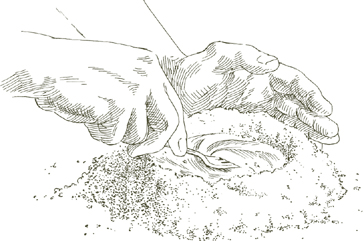
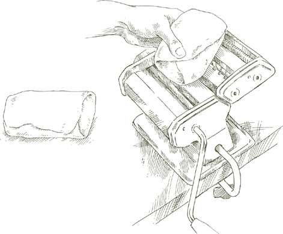
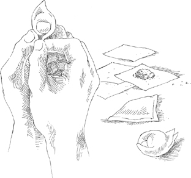
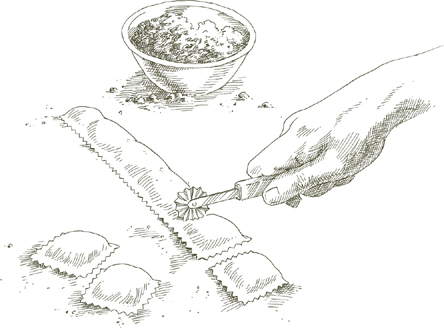
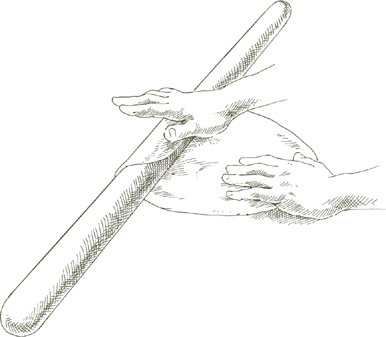
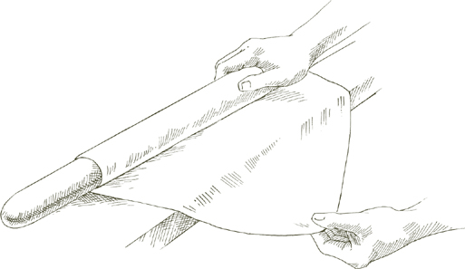
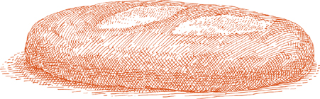
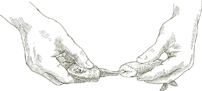
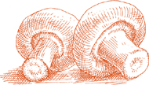

Кастрюля  Используйте легкую кастрюлю, например, эмалированную алюминиевую, которая быстро передает тепло и легко управляется, когда полна пасты и кипящей воды.
Используйте легкую кастрюлю, например, эмалированную алюминиевую, которая быстро передает тепло и легко управляется, когда полна пасты и кипящей воды.
Дуршлаг Достаточно большой дуршлаг с ножками должен быть готов, надежно установленный в раковине или большом тазу.
Вода Пасте нужно много воды, чтобы она могла свободно перемещаться, иначе она станет липкой. Для одного фунта пасты требуется четыре кварты воды. Никогда не используйте менее трех кварт, даже для небольшого количества пасты. Добавляйте еще одну кварту на каждые полфунта, но не готовьте более 2 фунтов в одной кастрюле. Большие количества пасты трудно правильно приготовить, а кастрюли с таким количеством воды тяжелые и опасные в обращении.
Соль На каждый фунт пасты добавляйте не менее 1½ столовых ложек соли, больше, если соус очень мягкий и недостаточно соленый. Добавьте соль, когда вода закипит. Подождите, пока вода снова не закипит, прежде чем добавлять пасту.
Оливковое масло Никогда не добавляйте масло в воду, кроме случаев, когда готовите фаршированную домашнюю пасту. В последнем случае столовая ложка масла в кастрюле уменьшает трение и предотвращает разрыв фаршированной пасты.
Расчет порций Один фунт фабричной, упакованной сухой пасты должен дать 4–6 порций, в зависимости от того, что подается с пастой. Для приблизительных порций свежей пасты смотрите раздел о домашней пасте.
Помещение пасты в кастрюлю Паста добавляется после того, как кипящая вода была посолена и снова закипела. Поместите всю пасту сразу и накройте кастрюлю на короткое время, чтобы ускорить возвращение воды к кипению. Следите за тем, чтобы вода не выкипела и не потушила газовую горелку. Когда вода снова закипит, готовьте либо без крышки, либо с крышкой, приоткрытой. Используя длинную деревянную ложку, помешивайте пасту в тот момент, когда она попадает в воду, и часто помешивайте в процессе приготовления.
• Если вы готовите длинную сушеную пасту, такую как спагетти или перчателли, когда вы опускаете ее в кастрюлю, используйте длинную деревянную ложку, чтобы согнуть нити и полностью погрузить их. Не ломайте спагетти или любую другую длинную пасту на более мелкие куски.
• Если вы используете домашнюю пасту, соберите ее в кухонное полотенце, крепко держите один конец полотенца высоко над кипящей водой, ослабьте нижний конец и дайте пасте скользнуть в кастрюлю.
Аль денте Паста должна быть приготовлена до состояния, когда она тверда на вкус, аль денте. Твердость спагетти и другой сушеной фабричной пасты отличается от феттучини и другой домашней пасты. Последняя никогда не может быть такой твердой и жевательной, как первая, но это не значит, что ее следует позволять стать слишком мягкой: она всегда должна предлагать некоторое сопротивление при укусе. Когда этого нет, паста становится тяжелой, теряет легкость и способность быстро передавать ароматы соуса.
Сливание Как только паста готова, и ни на секунду позже, вы должны ее слить, вылив из кастрюли в дуршлаг. Потрясите дуршлаг несколько раз вбок и вверх-вниз, чтобы слить всю воду.
Соус и перемешивание Подготовьте соус, когда паста готова. Не позволяйте слитой пасте оставаться в дуршлаге, ожидая завершения или разогрева соуса. Перенесите готовую, слитую пасту без задержки в теплую сервировочную миску. Как только она окажется в миске, начните перемешивать ее с соусом. Если требуется тертый сыр, добавьте немного сразу и перемешайте пасту с ним. Тепло растопит сыр, который затем может сливаться с соусом, образуя кремообразную консистенцию.
В последовательности шагов, которые приводят к приготовлению блюда из пасты и его подаче на стол, нет ничего более важного, чем перемешивание. До момента перемешивания паста и соус являются двумя отдельными сущностями. Перемешивание соединяет их и делает единым целым. Масло или сливочное масло должны равномерно и тщательно покрыть каждую нить пасты, достать до каждой щели и вместе с этим перенести ароматы компонентов соуса. Какой бы замечательный ни был соус, он не может просто лежать сверху или на дне тарелки. Если он не распределен широко и равномерно, паста, для которой он предназначен, будет иметь мало вкуса.
Когда вы добавляете соус, быстро перемешивайте, используя вилку и ложку или две вилки, поднимая пасту с дна тарелки, разделяя ее, поднимая, опуская, переворачивая, закручивая вокруг. Если соус прилипает слишком густо, отделите его вилкой и ложкой, чтобы он мог равномерно распределиться.
Когда соус на основе сливочного масла, добавьте кусочек свежего масла и сделайте один или два последних перемешивания пасты. Если соус на основе оливкового масла, следуйте той же процедуре, используя свежее оливковое масло вместо масла.
Примечание Свежая паста более впитывающая, чем фабричная паста, и обычно требуется больше масла или масла.
Подача Как только паста покрыта соусом, подавайте ее немедленно, приглашая ваших гостей и семью отложить разговоры и начать есть. Важно помнить, что с момента, как паста готова, не должно быть пауз в последовательности слива, подачи соуса, подачи и еды. Готовую, горячую пасту нельзя оставлять, иначе она превратится в влажную, клейкую массу.
 Фабричная паста
Фабричная паста 
ТЕПЛАЯ, сухая паста, о которой говорят как о фабричной, включает такие знакомые формы, как спагетти, пенне и фузилли. Эти формы нельзя сделать так же успешно дома, как в коммерческих паста-заводах с промышленным оборудованием. Сухая паста из фабрик не обязательно менее качественная, чем свежая паста, которую можно сделать дома. Напротив, для многих блюд фабричная паста является лучшим выбором, хотя для некоторых других может понадобиться особые характеристики домашней пасты. Различия между двумя категориями пасты и их общими применениями обсуждаются в разделе 'Паста' введения.
Как сделать свежую пасту дома ЕСЛИ вы не живете в Эмилия-Романия, где в некоторых городах и деревнях все еще есть несколько магазинов, продающих пасту, сделанную вручную, вы можете сделать гораздо лучшую свежую пасту, используя метод скалки или метод машины, чем вы можете купить или съесть где-либо.
Тем не менее, нужно сказать, что два метода не просто разные способы достижения одной и той же цели. Паста, раскатанная вручную, совершенно отличается от свежей пасты, сделанной с помощью машины. В ручной пасте тесто растягивается, быстро чередуя движения рук, по длине деревянного прута длиной в ярд. В методе машины тесто сжимается между двумя цилиндрами, пока не достигнет желаемой тонкости.
Цвет пасты, растянутой вручную, заметно глубже, чем у пасты, растянутой машиной; ее поверхность имеет едва заметный узор пересекающихся рифлений и впадин; при варке паста впитывает соус и выделяет влажность. На вкус она имеет легкое, мягкое прикосновение, которое не может повторить ни одна другая паста. Но изучение метода скалки, к сожалению, не просто вопрос следования инструкциям, а скорее обучения ремеслу. Инструкции необходимо выполнять снова и снова с большим терпением и освоить с помощью пары ловких, готовых рук, пока движения не будут выполняться интуитивно, а не осознанно.
Машина, с другой стороны, требует практически никаких навыков для использования. Как только вы научитесь комбинировать яйца и муку в тесто, которое не слишком влажное и не слишком сухое, все, что вам нужно сделать, это следовать серии чрезвычайно простых, механических шагов, и вы сможете произвести отличную свежую пасту недорого, дома, с самой первой попытки.
Мука В Италии классическая свежая яичная паста, произведенная в болоньезском стиле, делается из муки, известной как 00, doppio zero. Это мука белого цвета, мягкая как тальк, менее сильная по содержанию глютена, чем американская универсальная мука как отбеленного, так и неотбеленного сорта. Когда я готовлю свежую пасту дома за пределами Италии, я обнаружила, что неотбеленная универсальная мука дает наиболее удовлетворительный результат: с ней легко работать; паста, которую она производит, пышная и имеет замечательную текстуру и аромат.
Существует путаница относительно достоинств семолины, которая производится из твердых сортов пшеницы, самой сильной из всех. На итальянском это называется semola di grano duro, и вы найдете ее в списке всех итальянских упаковок фабричной пасты. Это единственная подходящая мука для промышленно произведенной пасты, но я не предпочитаю ее для домашнего использования. Во-первых, ее консистенция часто зернистая, даже когда она продается как мука для пасты, и зернистая семолина вызывает трудности в работе. Даже когда она измельчена до тонкой, шелковистой текстуры, которую вам нужно, вы должны использовать машину, чтобы раскатать ее; попытка сделать это с помощью скалки приведет к почти безнадежной борьбе. Мой совет - оставить семолину фабрикам и коммерческим производителям пасты: дома используйте неотбеленную универсальную муку.
Машина Единственный тип машины для пасты, который стоит рассмотреть, это тот, который имеет один набор параллельных цилиндров, обычно сделанных из стали, для замешивания и раскатывания теста, и двойной набор резаков, один широкий для феттучини, другой для tagliolini, очень тонкой лапши. Практически все эти машины ручные, но существуют и электрические, а также есть отдельный мотор, который можно купить и который легко подключается к валу машины, чтобы заменить ручку.
Не поддавайтесь искушению использовать одно из тех ужасных устройств, которые пережевывают яйца и муку с одного конца и Extrude выбор форм пасты с другого конца. То, что выходит, это слизистый и совершенно презренный продукт, и, кроме того, это устройство является раздражающей неприятностью для очистки.

Для желтого теста для пасты 1 чашка муки без отбеливания и 2 крупных яйца производят около ¾ фунта домашней пасты, что даст 3 стандартные порции или 4 порции закусочного размера. Используйте вышеуказанное как приблизительное соотношение муки к яйцам, которое вам может понадобиться изменить в зависимости от способности яиц к впитыванию, а иногда даже от влажности или ее отсутствия на кухне.
Примечание Если вы готовите тесто для фаршированной желтой пасты, добавьте ½ столовой ложки молока к вышеуказанным пропорциям.
Для зеленого теста для пасты 1½ чашки муки без отбеливания, 2 крупных яйца и либо ½ упаковки (около 280 г) замороженного листового шпината, размороженного, ИЛИ ½ фунта свежего шпината. Выход составляет примерно 1 фунт зеленой пасты, что дает 4 стандартные порции.
Если вы используете размороженный шпинат, готовьте его в закрытой кастрюле с ¼ чайной ложки соли, пока он не станет мягким и не потеряет свой сырой вкус. Если используете свежий шпинат, вымойте его и приготовьте. Слейте любой шпинат от всей жидкости, и когда он остынет достаточно, чтобы с ним можно было работать, сожмите его руками, чтобы избавиться от оставшейся жидкости. Очень мелко нарежьте ножом, но не в кухонном комбайне, который вытягивает слишком много влаги.
Примечание Кроме шпината, никакие другие красители не могут быть рекомендованы в качестве альтернативы основному желтому тесту для пасты. Другие вещества не имеют вкуса и, следовательно, не представляют гастрономического интереса. Или, если они действительно вносят вкус, как, например, у жалкой черной пасты, тесто которой окрашено чернилами кальмара, его вкус не свежий. Паста не нуждается в украшении, кроме цветов и ароматов своего соуса.
Смешивание яиц и муки Поскольку никто не может заранее точно сказать, сколько муки нужно, разумный метод смешивания яиц и муки — это делать это вручную, что позволяет вам корректировать пропорцию муки по мере работы.
Вылейте муку на рабочую поверхность, сформируйте из нее холмик и выемите глубокую ямку в центре. Разбейте яйца в ямку. Если вы готовите зеленое тесто, также добавьте нарезанный шпинат на этом этапе.
Легко взбейте яйца вилкой в течение примерно 1 минуты, как будто вы готовите омлет. Если используете шпинат, взбивайте еще минуту. Наклоните немного муки на яйца, постепенно смешивая ее вилкой, пока яйца больше не будут жидкими. Соберите края холмика вместе руками, но отодвиньте часть муки в сторону, чтобы она не мешала, пока не поймете, что она вам абсолютно нужна. Работайте с яйцами и мукой вместе, используя пальцы и ладони, пока не получите однородную массу. Если она все еще влажная, добавьте больше муки.

Когда масса будет вам приятна и вы подумаете, что больше муки не требуется, вымойте руки, высушите их и проведите простой тест: нажмите большим пальцем глубоко в центр массы; если он выходит чистым, без каких-либо липких остатков, больше муки не нужно. Уберите массу из яиц и муки в сторону, очистите рабочую поверхность от любых рыхлых или засохших кусочков муки и крошек и подготовьтесь к замесу.
Замес Правильный замес теста может быть самым важным шагом в приготовлении хорошей пасты с помощью машины, и это один из секретов превосходной свежей пасты, которую вы можете сделать дома. Тесто для пасты можно замесить в машине, но это не намного быстрее, чем делать это вручную, и это гораздо менее удовлетворительно, особенно когда замешивается в кухонном комбайне.
Вернитесь к массе муки и яиц. Надавите на нее основанием ладони, держа пальцы согнутыми. Сложите массу пополам, сделайте половинный поворот, снова сильно надавите на нее основанием ладони и повторите операцию. Убедитесь, что вы всегда поворачиваете шарик теста в одном направлении, по часовой стрелке или против часовой стрелки, как вам удобно. Когда вы замесите его таким образом в течение 8 полных минут и тесто будет гладким, как детская кожа, оно готово для машины.

Примечание Если вы работаете с большой массой, вы можете разделить ее на 2 или более частей и закончить замес одной, прежде чем перейти к другой. Держите любую часть массы, с которой вы не работаете, или тесто, которое вы закончили замешивать, плотно закрытой в пленке.
Раскатывание Разделите каждый шарик теста, сделанного из 2 яиц, на 6 равных частей. Другими словами, кусочков теста, которые вы получите для раскатывания, должно быть в три раза больше, чем яиц, которые вы использовали.
Spread clean, dry, cloth dish towels over a work counter near where you’ll be using the machine. If you are making a lot of pasta you’ll need a lot of counter space and a lot of towels.

Set the pair of smooth cylinders, the thinning rollers, at their widest opening. Flatten one of the pieces of dough by pummeling it with your palm, and run it through the machine. Fold the dough twice into a third of its length, and feed it by its narrow end through the machine once again. Repeat the operation 2 or 3 times, then lay the flattened strip of pasta over a towel on the counter. Since you are going to have a lot of strips, start at one end of the counter, leaving room for the others.
Take another piece of dough, flatten it with your hand, and run it through the machine exactly as described above. Lay the strip next to the previously thinned one on the towel, but do not allow them to touch or overlap, because they are still moist enough to stick to each other. Proceed to flatten all the remaining pieces in the same manner.

Note This is the procedure to follow if you are going to cut the pasta into noodles. If you plan to use it for raviolini or other stuffed shapes, please see the stuffed pasta note.
Close down the opening between the machine’s rollers by one notch. Take the first pasta strip you had flattened and run it once through the rollers, feeding it by its narrow end. Do not fold it, but spread it flat on the cloth towel, and move on to the next pasta strip in the sequence.
When all the pasta strips have gone through the narrower opening once, bring the rollers closer together by another notch, and run the strips of pasta through them once again, following the procedure described above. You will find the strips becoming longer, as they get thinner, and if there is not enough room to spread them out on the counter, you can let them hang over the edge. Continue thinning the strips in sequence, progressively closing down the opening between the rollers one notch at a time, until the pasta is as thin as you want it. This step-by-step thinning procedure, which commercial makers of fresh pasta greatly abbreviate or skip altogether, is responsible, along with proper kneading, for giving good pasta its body and structure.
Stuffed pasta note Pasta dough to be used as a wrapper for stuffing should be soft and sticky. You must, therefore, make the following change in the sequence described above: Take just one piece of dough at a time through the entire thinning process, cut it, and stuff it as the recipe you’ve chosen describes. Then go on to the next piece. Keep all the pieces of dough waiting to be thinned out tightly wrapped in plastic wrap.
Drying For all cut pasta, fettuccine, tagliolini, pappardelle, and so on, allow the strips spread on the towels to dry for 10 minutes or more, depending on the temperature and ventilation of your kitchen. From time to time, turn the strips over. The pasta is ready for cutting when it is still pliant enough that it won’t crack when cut, but not so soft and moist that the strands will stick to each other. Pasta requires no additional drying except for the purpose of storing it.
Cutting flat pasta Use the broader set of cutters on the machine to make fettuccine, and the narrower ones for tonnarelli (see below) or tagliolini. When the pasta strips are sufficiently, but not excessively, dried, feed them through the cutter of choice. As the ribbons of noodles emerge from the cutter, separate them and spread them out on the cloth towels. To cook, gather the pasta in a single towel, as described in "The Essentials of Cooking Pasta", and slide it into boiling, salted water.
• Tonnarelli One of the most interesting shapes is this thin, square noodle from central Italy, which goes superbly well with an exceptional variety of sauces. It is also known as maccheroni alla chitarra because of the guitar-like tool used in central Italy for cutting it. It is as thick as it is broad. Its firmer body gives it the substance and “bite” of factory pasta, while its surface maintains the texture and affinity for delicate sauces of all homemade pasta.
The machine does a perfect job of making tonnarelli. The dough for tonnarelli must be left thicker than that for fettuccine and other noodles. To obtain the square cross-section this noodle must have, the thickness of the pasta strip should be equal to the width of the narrower grooves of the machine’s cutter. On most machines, the last thinning setting for tonnarelli is the second before the last. To make sure, run some dough through that setting and make sure that its thickness equals the width of the narrower cutting grooves.

• Pappardelle In Bologna, the city where homemade pasta reigns supreme, this eye-filling broad noodle is one of the favorite cuts. Its larger surface accepts substantial sauces, whether made with meat or vegetables or a combination of both. It has to be cut by hand, because the machine has no cutters for pappardelle. Cut the rolled-out pasta strips into ribbons about 6 inches long and 1 inch wide. A pastry wheel is the most efficient tool to use for the purpose, and the fluted kind yields the most attractive results.

• Tagliatelle When you use the broader cutters of the pasta machine, what you get is fettuccine. Tagliatelle, the classic Bolognese noodle and the best suited to Bolognese meat sauce, is a little broader and must be cut by hand. When the thinned strips of pasta are dry enough to cut, but still soft enough to bend without cracking, fold them up loosely along their length, making a flat roll about 3 inches wide at its sides. With a cleaver or similar knife, cut the roll into ribbons about ¼ inch wide. Cut parallel to the original length of the pasta strip so that when you unroll the tagliatelle the noodle will be the full length of the strip.

Drying noodles for long storage It is often assumed that fresh pasta must be soft. Nothing could be more misleading. It is indeed soft the moment it’s made, and it is perfectly all right to cook it while it is still in that state. But if one waits it will dry; it is a natural process and there is no reason to interfere with it. On the contrary, all the artificial methods by which fresh pasta is kept soft—sprinkling it with cornmeal, wrapping in plastic, refrigerating it—are not merely unnecessary, they actually undermine the quality of the pasta and ought to be shunned. When cooked, properly dried fresh pasta delivers all the texture and flavor it had originally. The limp product marketed as “fresh” pasta does not.

Once dried, fresh homemade noodles can be stored for weeks in a cupboard, just like a box of spaghetti. As the noodles are cut, gather several strands at a time and curl them into circular nest shapes. Allow them to dry totally before storing them because, if any moisture remains when they are put away, mold will develop. To be safe, let the nests dry on towels for 24 hours. When dry, place them in a large box or tin, interleaving each layer of nests with paper towels. Handle carefully because they are brittle. Store in a dry cupboard, not in the refrigerator.
Note Allow slightly more cooking time for dried fresh pasta.
It is in its cuts for soup that homemade pasta, with its light egg flavor and gentler consistency, clearly emerges as more desirable than the boxed factory-made kind.
• Maltagliati It is the best pasta you can use for thick soups, especially bean soups. Its name means “badly cut,” because its irregular lozenge shape is not that of a long, even-sided ribbon. Fold the pasta strips into flat rolls, as described above for tagliatelle. Instead of cutting the roll straight as you would for regular noodles, cut it on the bias, cutting off first one corner, then the other. This leaves the pasta roll coming to a sharp point in the center of its cut end. Even off that end with a straight cut across, then cut off the corners once more as before. When you have finished cutting one roll, unfold and loosen the maltagliati immediately so they don’t stick to each other.
Every time you make pasta, it is a good idea to use some of the dough for maltagliati. It can be dried for long storage, as described above, and you will have it available any time you want to add it to a soup.

• Quadrucci They are little squares, as their Italian name tells us, and they are made by first cutting the pasta into tagliatelle widths then, instead of unfolding the noodles, cutting them crosswise into squares. Quadrucci are particularly lovely in a fine homemade meat broth with peas and sautéed chicken livers.
• Manfrigul It is pasta chopped into small, barley-like nuggets, a specialty of Romagna, the northeastern coastal area on the Adriatic. Its robust, inimitable chewiness contributes enjoyable textural contrast to soup.
Prepare kneaded dough. Flatten the dough with the palm of your hand to a thickness of about 2 inches. Cut it into the thinnest possible slices and spread these on a clean, dry, cloth towel. Turn them once or twice and allow them to dry until they lose their stickiness, but not so dry that they become brittle. Depending on the temperature and ventilation in the kitchen, it may take between 20 and 30 minutes. Cut one of the slices to see whether the dough is still sticky. If not, transfer all the sliced dough to a cutting board and dice it very fine with a sharp knife.
Note Manfrigul can be chopped in the food processor, using the steel blade. Pulse the motor on and off to ensure fairly even chopping. Stop when you reach the consistency of very tiny pellets. When done, part of the dough will have become pulverized. Discard it by emptying the processor’s bowl into a fine strainer and shaking the powdered dough away.
Keeping manfrigul: It keeps so well that it is a good idea to have a supply always on hand. Spread on a dry, clean, cloth towel and let it dry out thoroughly. It takes about 12 hours, so you may want to leave it out overnight. Store it in a cupboard in a closed glass jar.
Use manfrigul in vegetable soups, or in any soup where you might use rice or barley. It is also excellent on its own, in Basic Homemade Meat Broth, served with grated Parmesan.
For all the shapes given below, work only with soft, moist, just-made dough. Before beginning, read the instructions given in the Stuffed Pasta note. The softness of dough that has just been rolled out makes it easier to shape, and its stickiness is necessary to produce a tight seal that will keep the stuffing from leaking during the cooking.
• Tortellini The dumplings that in Bologna are called tortellini, in Romagna—the provinces of Ravenna, Forlì, and Rimini—are called cappelletti. The fillings may vary, but the method for making the wrappers is the same. Trim the strips of pasta dough into rectangular bands 1½ inches wide. Do not discard the trimmings, but press them into one of the balls of dough to be thinned out later.

Нарежьте полоски на квадраты размером 1½ дюйма (4 см). Поместите около ¼ чайной ложки начинки, указанной в рецепте, в центр каждого квадрата. Сложите квадрат по диагонали пополам, образуя два треугольника, один над другим. Края верхней половины треугольника должны быть на расстоянии около ⅛ дюйма (0.6 см) от краев нижней половины. Плотно прижмите края пальцем, надежно запечатывая их.

Поднимите треугольник за один из углов его длинной стороны, сложенной стороны. Поднимите другой конец другой рукой, удерживая его между большим и указательным пальцем. Теперь треугольник должен быть обращен к вам, его длинная сторона параллельна кухонному столу, а кончик направлен прямо вверх. Не отпуская конец, обведите указательным пальцем одной руки вокруг задней части треугольника, и, поворачивая кончик пальца к себе, поднимите его к основанию треугольника, толкая его вверх в направлении кончика. При этом вершина треугольника должна наклониться к вам и сложиться над основанием. Тем же движением сведите вместе два угла, которые вы держите, образуя кольцо вокруг кончика вашего указательного пальца, который все еще должен быть обращен к вам. Накройте один угол другим, плотно прижимая их вместе, чтобы надежно закрыть кольцо. Соскользните тортельлино с пальца и положите его на чистое, сухое полотенце.
Продолжая делать их, укладывайте все тортельни в ряды на полотенце, следя за тем, чтобы они не касались друг друга, иначе они прилипнут и порвутся при разделении. Хотя они готовы к приготовлению сразу, вероятно, вы будете делать их за несколько часов или даже за день до этого. При приготовлении заранее переворачивайте их время от времени, чтобы они равномерно высыхали со всех сторон. Не позволяйте им касаться друг друга, пока тесто не станет жестким, иначе вы получите порванные тортельни.
Совет: Прежде чем делать тортельни в первый раз, нарежьте бумажные салфетки на квадраты размером 1½ на 1½ дюйма (4 на 4 см) и практикуйтесь на них, пока не почувствуете, что делаете это правильно.
• Тортеллони, Тортелли, Равиоли Их называют разными именами, и они могут различаться по размеру и начинке, но все они имеют одну форму: квадрат. Чтобы сделать их, обрежьте мягкое, свежее тесто для пасты на длинный прямоугольник, который в два раза шире, чем пельмень, указанный в рецепте.

Предположим, что в рецепте требуются тортеллони с шириной сторон 2 дюйма (5 см). Нарежьте тесто на длинный прямоугольник шириной 4 дюйма (10 см). Поместите точки начинки на расстоянии 2 дюйма (5 см) друг от друга. Расстояние между точками всегда должно быть таким же, как ширина пельменя, в данном случае 2 дюйма (5 см). Ряд точек начинки проходит параллельно краям прямоугольника и отступает на 1 дюйм (2.5 см) — половину ширины пельменя — от одного края. (Это гораздо проще сделать, чем попытаться визуализировать. Попробуйте сначала с бумагой, нарезанной по размеру, и вы увидите.)
Как только прямоугольник будет усыпан начинкой, поднимите край, находящийся дальше от ряда точек, и соедините его с другим краем, создавая длинную трубку, которая заключает начинку. Используйте рифленый нож для теста, чтобы обрезать соединенные края и оба конца трубки, запечатывая ее со всех сторон. Тем же ножом нарежьте трубку между каждой горкой начинки, разделяя ее на квадраты.

Разложите квадраты на чистых, сухих полотенцах, следя за тем, чтобы они не касались друг друга, пока тесто еще мягкое. Если они касаются, они прилипнут друг к другу и порвутся, когда вы попытаетесь их разъединить. Если вы не собираетесь готовить их сразу, переворачивайте квадраты время от времени, пока они сохнут.
• Гарганелли Гарганелли, ручная трубчатая паста с рифленой поверхностью, является специальностью Имолы и других городов Романьи. Его гибкая форма, несколько напоминающая фабричные пенне, и его текстура, которая соответствует домашней пасте, создают уникальные и вкусные ощущения в сочетании с подходящим соусом. Хотя он не фаршируется, гарганелли должны быть сделаны из мягкого, свежего теста, как тортельни и тортеллони выше.
В Романьи гарганелли делают с помощью небольшого инструмента, похожего на ткацкий станок, называемого петтино, или гребень. В качестве замены вы можете использовать чистый, новый гребень с зубьями длиной не менее 1½ дюйма (4 см). Афро-гребень подойдет. Вам также понадобится небольшой деревянный брусок или гладкий, идеально круглый карандаш диаметром ¼ дюйма (0.6 см) и длиной 6–7 дюймов (15–18 см).

Нарежьте мягкое, свежее тесто на квадраты размером 1½ дюйма (4 см). Положите гребень горизонтально на стол, зубья направлены от вас. Положите квадрат пасты по диагонали на гребень так, чтобы один угол был направлен к вам, а другой — к кончикам зубьев гребня. Поместите деревянный брусок или карандаш на квадрат и параллельно гребню. Заверните угол квадрата, обращенный к вам, вокруг бруска и, с легким давлением вниз, толкайте брусок от себя и с гребня. Наклоните брусок на его конец, и маленькая рифленая трубка пасты соскользнет. Разложите гарганелли на чистом, сухом полотенце, следя за тем, чтобы они не касались друг друга. Гарганелли не могут быть сделаны заранее и высушены, как другая паста, потому что они трескаются во время приготовления. Их лучше готовить сразу, но если вы не можете этого сделать, погрузите их в кипящую воду на несколько секунд, сразу слейте, перемешайте с оливковым маслом и разложите на подносе для остывания.
• Стричетти Это форма, известная как «бабочки» на английском или фарфаллини на стандартном итальянском; стричетти — это диалект Романьи, где, вероятно, возникла эта форма. Это самая простая из всех форм пасты, которую можно сформировать вручную. Нарежьте мягкое, свежее тесто для пасты на прямоугольники размером 1 на 1½ дюйма (2.5 на 4 см). Сожмите каждый прямоугольник в середине его длинных сторон, сводя стороны вместе и крепко прижимая их. Существует также немного более сложный метод, который имеет преимущество в том, что образует меньшую горку в центре. Поместите большой палец в середину прямоугольника и сложите центр одной из длинных сторон к нему; замените большой палец кончиком указательного пальца и, сжимая, приведите центр другой стороны прямоугольника к встрече с ним. Плотно сожмите, чтобы зафиксировать складку.
Сушка фаршированной и формованной пасты Тортельни, равиоли и другая фаршированная или формованная паста, описанная выше, могут храниться не менее недели после полного высыхания и затвердевания. Позвольте пасте высохнуть в течение 24 часов, переворачивая ее время от времени, прежде чем убрать. Ее можно хранить в шкафу, как это делается в Италии, но если вы предпочитаете хранить фаршированную пасту в холодильнике, вы можете это сделать. Убедитесь, что она полностью высохла, иначе появится плесень.
Необходимое оборудование Чтобы сделать пасту вручную, вам нужен большой, устойчивый стол и скалка для пасты. Для нарезки пасты после раскатки будет полезно иметь китайский нож, который больше всего напоминает нож, используемый в Болонье.
Глубина 24 дюйма (60 см) достаточна для стола, но чем длиннее он, тем удобнее с ним работать. Три фута (90 см) будет достаточно, а 4½ фута (135 см) будет идеальным.
Лучший материал для столешницы — это дерево, либо массивная древесина, либо разделочная доска. Формайка или корьян удовлетворительны. Наименее желательный материал — мрамор, который своей холодностью препятствует тесту, делая его неэластичным.
Если столешница деревянная, убедитесь, что край, обращенный к вам, не остроугольный, так как он может порезать тесто для пасты, свисающее с него. Если он не гладкий и округлый, отшлифуйте его, чтобы сделать таким. Ламинированные столешницы обычно не представляют этой проблемы, так как край либо покрыт молдингом, либо имеет тупую отделку.
Скалка для пасты уже и длиннее, чем скалки для выпечки. Ее классические размеры — 1½ дюйма (4 см) в диаметре и 32 дюйма (81 см) в длину. Найти ее вне Эмилии-Романьи не так просто, хотя некоторые особенно хорошо укомплектованные магазины кухонной утвари время от времени ее предлагают. Хороший магазин древесины может изготовить вам одну из деревянного бруска толщиной от 1от ½ до 2 дюймов (4-5 см). Отшлифуйте концы бруска, чтобы они были совершенно гладкими.
Уход и хранение скалки: Вымойте ее с мылом и водой, затем тщательно промойте под холодной проточной водой. Хорошо высушите мягкой тканью. Позвольте скалке полностью высохнуть в умеренно теплом помещении.
Смочите ткань любым нейтральным растительным маслом и протрите всю поверхность скалки. Не наносите слишком много масла, оно должно быть очень легким слоем. Когда масло впитается в дерево, протрите скалку мукой.
Чтобы поддерживать скалку в хорошем состоянии, повторяйте «уход» каждые десяток использований.
Храните скалку, подвешивая ее, чтобы избежать деформации. Ввинтите в один конец глазок и подвесьте скалку на крючок, установленный в стене или внутри шкафа. Берегите скалку от вмятин, так как любые неровности на ее поверхности могут порвать пасту.
Перед тем как взять скалку, внимательно прочитайте все следующие инструкции. Движения со скалкой напоминают балет рук, и их следует изучать так, как танцор учит свою партию. Прежде чем ваши руки смогут взять на себя управление и их действия станут интуитивными, логика и последовательность движений должны четко развернуться в сознании.
Тесто Приготовьте замешанный шарик теста точно так, как описано в разделе «Паста методом машинной обработки».
Совет: При первом приготовлении пасты вручную вам будет легче начать с зеленого теста для пасты. Оно мягче и легче растягивается.
Расслабление теста Даже когда вы станете опытным пользователем скалки, желательно дать замешанному тесту отдохнуть и расслабить глютен перед раскатыванием. Когда оно будет полностью замешано, заверните шарик теста в пленку и дайте ему отдохнуть при комнатной температуре не менее 15 минут и до 2 часов.
Первое движение Уберите пленку с шарика теста и поместите тесто в пределах комфортной досягаемости в центре рабочей поверхности. Немного придавите его, ударяя два или три раза ладонью.

Положите скалку поперек прижатой верхней части шарика, примерно на одну треть пути к его центру. Скалка должна быть параллельна краю стола, обращенному к вам.
Раскатайте шарик теста, сильно толкая скалку вперед, позволяя ей слегка откатиться назад к начальной точке, и снова толкая ее вперед, повторяя операцию 4 или 5 раз. Никогда не позволяйте скалке катиться на край теста или за него.
Поверните тесто на четверть оборота и повторите описанную выше операцию. Продолжайте поворачивать постепенно более плоский диск теста на четверть оборота вначале, затем постепенно меньше, но всегда в одном направлении. Если вы делаете это правильно, шарик будет расправляться в равномерно плоскую, регулярно круглую форму. Когда он будет раскатан до диаметра около 20–23 см, переходите к следующему движению.
Второе движение Теперь вы начнете растягивать тесто. Одной рукой прижмите ближайший край теста. Положите скалку на противоположный, дальний край теста, положив ее параллельно своей стороне стола. Одна рука будет работать со скалкой, в то время как другая будет служить опорой, удерживая край теста ближе к вам.
Заверните дальний край теста вокруг скалки. Начните катить скалку к себе, захватывая столько теста, сколько нужно, чтобы оно плотно легло под скалку. Держите ближайший край теста неподвижным другой рукой. Катите скалку к себе, затем используйте основание ладони, чтобы оттолкнуть ее назад. Не катите ее назад, а толкайте, натягивая лист теста между двумя руками и растягивая его. Это должно выполняться очень быстро, в непрерывном и плавном движении. Не оказывайте никакого давления вниз в этом движении. Не позволяйте руке, работающей со скалкой, оставаться на тесте дольше 2 или 3 секунд на одном месте.

Продолжайте катить скалку к себе, останавливаясь, толкая ее вперед, чтобы растянуть тесто, захватывая с собой больше теста, катя ее к себе, останавливаясь, растягивая, повторяя последовательность несколько раз, пока не захватите все тесто на скалке. Затем, пока тесто завернуто вокруг скалки, поверните скалку на пол-оборота — 180° — так, чтобы она указывала на вас, и разверните тесто, раскатывая его в плоскую форму.
Повторяйте операцию раскатывания и растягивания, описанную выше, пока тесто снова полностью не обернется вокруг скалки. Поверните скалку еще на 180° в том же направлении, как и раньше, разверните тесто с нее и повторите операцию еще раз. Продолжайте эту процедуру, пока лист теста не будет растянут до диаметра около 30 см. Сразу переходите к следующему движению.
Третье движение Это решающий шаг, в котором вы растянете лист теста почти вдвое по сравнению с предыдущим диаметром, когда оно перестанет быть просто тестом и станет пастой. Когда ваши руки освоят ритмичное и бездавленное выполнение этого движения, вы приобретете одно из самых ценных кулинарных искусств: домашнюю пасту в болоньезской традиции.
Круг теста лежит плоско перед вами на столе. Положите скалку на его дальний край, параллельно краю стола ближе к вам. Заверните конец теста вокруг центра скалки и катите скалку к себе, захватывая с собой около 10 см листа теста. Легко накройте обеими руками центр скалки, не касаясь ее пальцами. Катите скалку от себя, а затем к себе, захватывая с собой не более чем оригинальные 10 см теста. В то же время, когда вы катите скалку вперед и назад, раздвигайте руки в стороны от центра скалки и обратно к центру, быстро повторяя движение несколько раз.

Когда ваши руки движутся от центра, пусть основание ладоней касается поверхности теста, тяните его, растягивая его к концам скалки. В то же время, когда вы скользите руками от центра к концам, вы должны катить скалку к себе. Имейте в виду, что в этом движении есть некоторое давление, но оно направлено вбок, а не вниз. Если вы будете давить на тесто, оно не растянется, потому что прилипнет к скалке.
Когда руки движутся обратно к центру, они должны плавно скользить над тестом, едва касаясь его. Вы хотите растянуть тесто наружу, к концам скалки, а не тянуть его обратно к центру. В то же время, когда вы возвращаете руки к центру скалки, катите ее вперед, от себя.
Ваши руки должны быстро вылетать и возвращаться, касаясь теста только основанием ладони, прилагая усилие, когда они движутся наружу, но никогда не вес. И все это время вы также должны раскачивать скалку вперед и назад.
Захватите еще несколько дюймов теста на скалке и повторите комбинированное движение: руки движутся наружу и внутрь, скалка раскачивается вперед и назад.
Когда вы захватили и растянули все, кроме последних нескольких дюймов теста, поверните скалку на 180°, разверните лист теста, раскатывая его в плоскую форму, и начните снова с дальнего конца, повторяя всю описанную выше операцию растягивания.

По мере увеличения листа теста позвольте ему свисать с ближайшей стороны стола. Это будет действовать как противовес и способствовать действию растяжения. Но не опирайтесь на него, потому что вы можете его порвать. Когда вы захватываете тесто на скалке, вы позволите концу листа постепенно скользить обратно на стол.
Когда вы повернули лист пасты на полный оборот и он полностью растянут, разверните его в плоскую форму на столе и используйте скалку, чтобы разгладить любые складки.
Все третье движение должно быть выполнено за 10 минут или меньше для стандартного количества теста для пасты.
• Раскатывание шара теста в тонкий лист пасты — это гонка со временем. Тесто можно растягивать, пока оно мягкое и эластичное, но его гибкость недолговечна. Как только тесто начинает сохнуть, оно отказывается поддаваться и начинает трескаться. С самого начала вы должны работать над развитием скорости.
• Не готовьте пасту, когда духовка включена, или рядом с горячим радиатором, или в сквозняке. Все это приводит к высыханию теста.
• Работайте с тестом на расстоянии, удобном для ваших рук, чтобы лучше контролировать свои движения.
• Прежде чем начать раскатывать настоящее тесто, может быть полезно попробовать движение растяжки, используя круглый лист масляной ткани или не липкий пластик.
Проблемы: их причины и возможные решения
• Дыры в пасте. Это случается со всеми, иногда даже с экспертами. Обычно это не серьезно. Заделайте тесто, слегка перекрывая края разрывов. Закрепите слегка увлажненными кончиками пальцев, если необходимо. Разгладьте заплатку скалкой и продолжайте работать с тестом.
• Мелкие трещины по краям. Это означает, что тесто начало сохнуть быстрее, чем вы его растягивали. Или вы сделали край листа тоньше, чем центр. Лист нельзя растягивать дальше, но если он уже достаточно тонкий, его все еще можно использовать.
• Тесто распадается. Либо вы позволяете ему высохнуть, не растягивая его достаточно быстро, либо изначально замесили его слишком сухим, с слишком большим количеством муки. Это фатальный симптом. Начните заново, уделяя особое внимание замесу, чтобы получить тесто, которое будет нежным и эластичным.
• Вы не можете раскатать пасту достаточно тонко. В основном это вопрос практики и упорства. Перечитайте описания движений растяжки. Работайте быстрее. Также могут быть технические причины: тесто не было замешано достаточно долго или тщательно; в нем слишком много муки; вы не дали ему отдохнуть после замеса; на кухне может быть слишком жарко, слишком сухо или слишком сквознячно.
• Лист прилипает к себе или к скалке. Вы можете слишком сильно давить вниз при растяжении. Или вы замесили тесто слишком мягким, с недостаточным количеством муки. В этом случае вы можете спасти тесто, посыпав его мукой и равномерно распределив ее по листу.
• Паста слишком толстая для фетучини или тортеллини, но выглядит слишком хорошо, чтобы выбрасывать. Нарежьте ее на мальтаглиати, квадруччи или манфригуль и используйте в супе. Если она очень толстая, уделите достаточное время при варке.
Сушка домашней пасты Расстелите сухое, чистое полотенце на столе или рабочей поверхности и положите лист пасты ровно на полотенце, убедившись, что нет складок. Пусть одна треть листа свисает за край стола или поверхности. Через примерно 10 минут переверните лист, чтобы другая его часть свисала. Еще через 10 минут снова переверните. Общее время сушки зависит от мягкости теста и температуры и вентиляции в комнате. Тесто должно потерять достаточно влаги, чтобы не прилипать к себе при складывании и нарезке, но не должно пересохнуть, иначе оно станет хрупким и треснет. Обычно оно готово, когда поверхность пасты начинает выглядеть кожаной.
Нарезка домашней пасты Когда тесто достигнет желаемой степени сухости, намотайте лист на паста-скалку, уберите полотенце со стола и разверните пасту с скалки, положив её на рабочую поверхность. Поднимите край листа, который дальше от вас, и сложите лист свободно на 3 дюйма (7.5 см) от края. Сложите его снова и снова, пока весь лист не будет сложен в длинный, плоский, прямоугольный рулон шириной около 3 дюймов (7.5 см).
С помощью ножа или другого подходящего ножа нарежьте рулон поперек на ленты шириной ¼ дюйма (0.6 см) для tagliatelle, немного уже для fettuccine. Разверните ленты и разложите их на сухом, чистом полотенце. См. инструкции по сушке пасты для длительного хранения и для других форм.
Использование домашней пасты для tortellini и других форм Если вы собираетесь делать фаршированную пасту и другие формы, которые требуют мягкого теста, не позволяйте листу пасты высыхать. См. замечания о тесте для фаршированной пасты.
Обрежьте один конец листа пасты, чтобы получить ровный край. (Сохраните обрезки, чтобы нарезать их на кубики для супа.) Вырежьте прямоугольную полоску из листа; если вы делаете tortellini, полоска должна быть шириной 1½ дюйма (3.8 см); если вы делаете tortelloni или другие квадратные формы, полоска должна быть в два раза шире, чем форма, требуемая рецептом.
Переместите оставшийся лист теста в сторону и накройте его пленкой, чтобы он не высыхал. Используйте полоску, чтобы сделать tortellini или любую другую форму. Когда одна полоска будет превращена в желаемую форму, отрежьте еще одну идентичную полоску из основного листа, не забывая затем держать основной лист накрытым пленкой.
Соусы для пасты Долгое время итальянские блюда за границей характеризовались таким чрезмерным использованием томатов, что для многих, кто начал открывать для себя утонченность и бесконечное разнообразие региональных кухонь Италии, красный цвет и любой вкус томата в соусе стали представлять грубый и дискредитированный стиль кулинарии. Возможно, настало время для серьезной переоценки.
В томатном соусе нет ничего грубого. Напротив: ни одна другая подготовка не может так успешно передать колоссальное удовольствие от итальянской кухни, как компетентно выполненный соус с томатами; ни один вкус не выражает более ясно гениальность итальянских поваров, чем свежесть, непосредственность, богатство хороших томатов, ловко подобранных к наиболее подходящему выбору пасты.
Соусы, которые сгруппированы сразу ниже, это те, в которых томаты играют доминирующую роль. За ними следует широкий выбор рецептов, которые смещают акцент с томатов на другие овощи, на сыр, на рыбу, на мясо, иллюстрируя неограниченный выбор ингредиентов, на основе которых может быть создан соус для пасты.
Основной метод приготовления Соусы для пасты могут готовиться медленно или быстро, они могут занимать 4 минуты или 4 часа, но они всегда готовятся путем испарения, что концентрирует и четко определяет их вкус. Никогда не готовьте соус в закрытой кастрюле, иначе он получится безвкусным, пареным, слабо сформулированным вкусом.
Проба соуса и корректировка соли Соус должен быть достаточно соленым, чтобы адекватно приправить пасту. Безвкусность не является добродетелью, отсутствие вкуса не приносит радости. Всегда пробуйте соус перед тем, как смешивать его с пастой. Если он кажется недостаточно соленым, он не будет достаточно соленым для пасты. Помните, что он должен иметь достаточно вкуса, чтобы покрыть фунт или более вареной, практически несоленой пасты.
Когда томат является основным ингредиентом: Если они доступны, используйте свежие, естественно и полностью спелые, сливовидные томаты. Другие сорта, кроме сливовидных, могут использоваться, если они также спелые и действительно фруктовые, а не водянистые. Если полностью удовлетворительные свежие томаты недоступны, лучше использовать консервированные импортные итальянские сливовидные томаты. Если ваши местные магазины не продают их, экспериментируйте с другими консервированными сортами, пока не сможете определить, какой из них имеет лучший вкус и консистенцию. См. краткое обсуждение свежих и консервированных томатов как компонента итальянской кухни.
Примечание о времени приготовления Для всех томатных соусов, которые следуют, указанное время приготовления является ориентировочным. Если вы делаете большее количество соуса, это займет больше времени; если кастрюля широкая и мелкая, соус будет готовиться быстрее, если глубокая и узкая, он будет готовиться медленнее. Только вы можете сказать, когда он готов. Пробуйте его на плотность: он не должен быть слишком густым или слишком водянистым, а по вкусу томат должен потерять свой сырой вкус, не теряя сладости или свежести.
Примечание о заморозке Где указано, томатные соусы могут быть успешно заморожены. После размораживания тушите в течение 10 минут перед тем, как смешивать с пастой.
Напоминание Если соус содержит масло, всегда добавляйте к пасте дополнительную столовую ложку свежего масла; если в нем оливковое масло, полейте сырым оливковым маслом во время перемешивания.
Если в рецепте не указано иное, свежие спелые помидоры должны быть подготовлены для использования в соусе одним из двух методов, приведенных ниже. Метод бланширования может привести к более мясистой, более деревенской консистенции. Метод с использованием овощерезки дает более шелковистый, гладкий соус.
Метод бланширования Опустите помидоры в кипящую воду на минуту или меньше. Слейте воду и, как только они остынут до удобной температуры, очистите их от кожицы и нарежьте крупными кусками.
Метод с использованием овощерезки Вымойте помидоры в холодной воде, разрежьте их вдоль пополам и положите в кастрюлю с крышкой. Включите средний огонь и готовьте в течение 10 минут. Установите овощерезку с диском с самыми большими отверстиями над миской. Переложите помидоры с их соком в овощерезку и пюрируйте.

ТАКОЙ СОУС — САМОЕ ПРОСТОЕ из всех соусов, и ни один не обладает более чистым, более неотразимо сладким томатным вкусом. Я знала людей, которые пропускали пасту и ели этот соус прямо из кастрюли ложкой.
На 6 порций
2 фунта (900 г) свежих спелых помидоров, подготовленных как описано, ИЛИ 2 чашки консервированных итальянских помидоров «сливка», нарезанных, вместе с соком
5 столовых ложек сливочного масла
1 средняя луковица, очищенная и разрезанная пополам
Соль
1–1½ фунта (450–700 г) пасты
Свеженатертый сыр пармиджано-реджано для подачи
Рекомендуемая паста Это непревзойденный соус для Картофельных Ньокки, но он также восхитителен с фабричной пастой таких форм, как спагетти, пенне или ригатони. Подавайте с тертым пармезаном.
Положите подготовленные свежие или консервированные помидоры в сотейник, добавьте сливочное масло, лук и соль, и готовьте без крышки на очень медленном, но постоянном кипении в течение 45 минут, или пока жир не отделится от томатов. Время от времени помешивайте, разминая любые крупные кусочки помидоров тыльной стороной деревянной ложки. Попробуйте и при необходимости досолите. Выбросьте лук перед тем, как смешать соус с пастой.
Примечание Можно заморозить в готовом виде. Удалите лук перед заморозкой.

МОРКОВЬ И СЕЛЕРЕЙ в этом соусе добавляются в сыром виде, что означает без обычной предварительной обжарки, вместе с помидорами. Сладость моркови и аромат сельдерея придают глубину свежему томатному вкусу соуса.
На 6 порций
2 фунта (900 г) свежих спелых помидоров, подготовленных как описано, ИЛИ 2 чашки консервированных итальянских помидоров «сливка», нарезанных, вместе с соком
⅔ чашки нарезанной моркови
⅔ чашки нарезанного сельдерея
⅔ чашки нарезанного лука
Соль
⅓ чашки оливкового масла первого холодного отжима
1–1½ фунта (450–700 г) пасты
Рекомендуемая паста Это универсальный соус для большинства видов фабричной пасты, особенно спагеттини и пенне.
1. Положите подготовленные свежие помидоры или консервированные в кастрюлю, добавьте морковь, сельдерей, лук и соль, и готовьте без крышки на медленном, устойчивом кипении в течение 30 минут. Время от времени помешивайте.
2. Добавьте оливковое масло, немного увеличьте огонь, чтобы достичь более сильного кипения, и время от времени помешивайте, пока не превратите помидоры в пюре с помощью тыльной стороны ложки. Готовьте еще 15 минут, затем попробуйте и при необходимости досолите.
Примечание Можно заморозить в готовом виде.
Вышеупомянутый соус, доведенный до конца, плюс следующее:
Майоран, 2 чайные ложки свежего, 1 если сушеного
2 столовые ложки свеженатертого пармиджано-реджано сыра
2 столовые ложки свеженатертого романо сыра
2 чайные ложки оливкового масла первого холодного отжима
1. Пока соус кипит, добавьте майоран, тщательно перемешайте и готовьте еще 5 минут.
2. Снимите с огня, добавьте тертый пармезан, затем романо, затем 2 чайные ложки оливкового масла. Сразу же перемешайте с пастой.
Рекомендуемая паста Отлично подходит для спагетти, но еще лучше для более толстой, полой формы, букатини или перчателли.
Основной соус выше, приготовленный до конца, плюс следующее:
2 чайные ложки сушеных листьев розмарина, очень мелко нарезанных, ИЛИ небольшая веточка свежего розмарина
½ чашки панчетты, нарезанной тонкими ломтиками и нарезанной на узкие полоски
1. Пока соус кипит, налейте оливковое масло в небольшую сковороду и включите средний огонь. Когда масло нагреется, добавьте розмарин и панчетту. Готовьте около 1 минуты, почти постоянно помешивая деревянной ложкой.
2. Переложите все содержимое сковороды в кастрюлю с томатным соусом и тушите в течение 15 минут, периодически помешивая.
Рекомендуемая паста Форма с углублениями или полостями, такая как ruote di carro (“колеса”), или conchiglie, или fusilli, будет хорошим выбором.
ЭТО БОЛЬШЕЕ, темный соус, чем предыдущие два, готовится дольше на основе обжаренных овощей.
На 6 порций
2 фунта (900 г) свежих спелых помидоров, подготовленных как описано, ИЛИ 2 чашки консервированных итальянских помидоров «сливка», нарезанных, вместе с соком
⅓ чашки оливкового масла первого холодного отжима
⅓ чашки нарезанного лука
⅓ чашки нарезанной моркови
⅓ чашки нарезанного сельдерея
Соль
1–1½ фунта (450–700 г) пасты
Рекомендуемая паста Большинство фабричных паст будет хорошо сочетаться с этим соусом, особенно такие формы, как ригатони, ребристые пенне или букатини.
1. Если используете свежие помидоры: Положите подготовленные помидоры в кастрюлю без крышки и готовьте на очень медленном огне около 1 часа. Время от времени помешивайте, разминая любые кусочки помидоров тыльной стороной деревянной ложки. Переложите в миску вместе со всеми соками.
Если используете консервированные помидоры: Перейдите к шагу 2 и добавьте помидоры, как указано в шаге 3.
2. Протрите кастрюлю насухо бумажными полотенцами. Влейте оливковое масло и добавьте нарезанный лук, включите средний огонь. Готовьте и помешивайте лук, пока он не станет очень светло-золотистым, добавьте морковь и сельдерей, и готовьте на сильном огне еще минуту, помешивая один-два раза, чтобы хорошо покрыть овощи.
3. Добавьте приготовленные свежие помидоры или консервированные, крупную щепотку соли, тщательно перемешайте и отрегулируйте огонь, чтобы готовить в открытой кастрюле на мягком, но постоянном кипении. Если используете свежие помидоры, готовьте 15–20 минут; если консервированные, томите 45 минут. Время от времени помешивайте. Перед выключением огня попробуйте и при необходимости добавьте соль.
Примечание Можно заморозить в готовом виде.

На 6 порций
⅓ чашки сливочного масла
по 3 столовые ложки лука, моркови, сельдерея, все очень мелко нарезанные
2½ фунта (около 1.1 кг) свежих спелых помидоров, подготовленных методом протирания через кухонный комбайн, ИЛИ 2½ чашки консервированных импортных итальянских помидоров «сливка» с соком
Соль
½ чашки густых сливок
1–1½ фунта (450–700 г) пасты
Свеженатертый сыр пармиджано-реджано для подачи на стол
Рекомендуемая паста Это идеальный томатный соус для фаршированной свежей пасты в таких вариантах, как Тортеллони с мангольдом, прошутто и рикоттой, Тортелли с петрушкой и рикоттой, Зеленые тортеллини с мясом и начинкой из рикотты или Гнocco с шпинатом и рикоттой. Подавайте с тертым пармезаном.
1. Положите все ингредиенты, кроме густых сливок, в кастрюлю и готовьте, не накрывая крышкой, на очень медленном огне в течение 45 минут. Время от времени помешивайте деревянной ложкой. На этом этапе, если вы используете консервированные помидоры, пюрируйте их через кухонный комбайн обратно в кастрюлю.
Примечание Можно заморозить на этом этапе.
2. Отрегулируйте температуру так, чтобы кипение немного усилилось. Добавьте густые сливки. Тщательно перемешайте и готовьте около 1 минуты, постоянно помешивая.
ЭТО ОДИН из многих вариантов соуса, который римляне называют alla carrettiera. Карреттьери были водителями ослиных или даже ручных повозок, на которых вино и продукты доставлялись в Рим с окружающих холмов, и соусы для их пасты импровизировались из самых дешевых и доступных ингредиентов.
На 4 порции
1 большой пучок свежего базилика
2 фунта (900 г) свежих спелых помидоров, подготовленных как описано, ИЛИ 2 чашки консервированных итальянских помидоров «сливка», слитых и нарезанных
5 зубчиков чеснока, очищенных и мелко нарезанных
5 столовых ложек оливкового масла первого холодного отжима
Соль
Черный перец, свежемолотый
1 фунт (450 г) пасты
Примечание Не пугайтесь количества чеснока, требуемого в этом рецепте. Поскольку он томится в соусе, он не подрумянивается, а варится, и его вкус очень приглушен.
Рекомендуемая паста Идеальная форма для томатного alla carrettiera — тонкое спагетти—спагеттини—но обычное спагетти также подойдет.
1. Отделите все листья базилика от стеблей, быстро промойте их в холодной воде и обсушите, используя дуршлаг, центрифугу для салата или просто собрав базилик в сухое полотенце и потрясая его два-три раза. Порвите все, кроме самых мелких листьев, на небольшие кусочки руками.
2. Положите помидоры, чеснок, оливковое масло, соль и несколько щепоток перца в кастрюлю и включите средний огонь. Готовьте 20–25 минут, или пока масло не отделится от помидоров. Попробуйте и при необходимости добавьте соль.
3. Снимите с огня, как только соус будет готов, добавьте порванный базилик, оставив несколько кусочков для добавления при перемешивании пасты.
ГРАДСКОЙ ГОРОД Аматрице, с которым связан этот соус, в августе проводит общественный праздник, главной достопримечательностью которого, безусловно, является знаменитая букатини — толстая полая паста — алл’Аматрициана. Однако ни один посетитель не должен пропустить грушевидные салями, называемые мортаделла, пекорино — сыр из овечьего молока — или рикорту, также сделанную из овечьего молока. Это одни из лучших продуктов своего рода в Италии.
При приготовлении соуса Аматрициана некоторые повара добавляют белое вино перед тем, как положить помидоры; я нахожу результат слишком кислым, но вы можете попробовать.
На 4 порции
2 столовые ложки растительного масла
1 столовая ложка сливочного масла
1 средняя луковица, мелко нарезанная
Кусок панчетты толщиной ¼ дюйма, нарезанный полосками шириной ½ дюйма и длиной 1 дюйм
1½ чашки консервированных итальянских сливовидных помидоров, слитых и нарезанных
Мелко нарезанный острый красный перец по вкусу
Соль
3 столовые ложки свеженатертого сыра пармиджано-реджано
2 столовые ложки свеженатертого сыра романо
1 фунт пасты
Рекомендуемая паста Невозможно сказать “алль'аматричиана” не думая о “букатини”. Эти два блюда неразделимы, как Ромео и Джульетта. Но другие сочетания соуса, такие как с пенне или ригатони или конхилье, могут быть почти столь же успешными.
1. Положите масло, сливочное масло и лук в кастрюлю и включите средний огонь. Обжаривайте лук, пока он не станет светло-золотистым, затем добавьте панчетту. Готовьте около 1 минуты, помешивая один-два раза. Добавьте помидоры, перец чили и соль, и готовьте в открытой кастрюле на медленном, но постоянном кипении в течение 25 минут. Попробуйте и при необходимости добавьте соль и острый перец.
2. Смешайте пасту с соусом, затем добавьте оба сыра и тщательно перемешайте снова.

На 4 порции
2 столовые ложки шалота ИЛИ мелко нарезанного лука
2½ столовые ложки сливочного масла
1 столовая ложка растительного масла
2 столовые ложки панчетты, прошутто, ИЛИ не копченого ветчины, нарезанной полосками шириной 0.6 см
1½ чашки свежих спелых помидоров, очищенных и нарезанных, ИЛИ консервированных итальянских сливов, нарезанных с соком
Небольшой пакет ИЛИ 28 г сушеных порчини, восстановленных
Фильтрованная вода из замачивания грибов
Соль
Черный перец, свежемолотый
450 г пасты
Свеженатертый сыр пармиджано-реджано для подачи
Рекомендуемая паста Конхиглие, пенне, рифленые зити или плотная свежая паста, такая как тоннарелли или паппарделле, см. "Специальные виды лапши." Подавайте с тертым пармезаном.
1. Положите шалот или лук в кастрюлю вместе со всем маслом и оливковым маслом, и включите средний огонь. Готовьте и помешивайте шалот или лук, пока он не приобретет бледно-золотистый цвет. Добавьте полоски панчеты или ветчины и готовьте 1-2 минуты, периодически помешивая.
2. Добавьте нарезанные помидоры с соком, восстановленные грибы, процеженную жидкость от замачивания грибов, соль и несколько щепоток перца. Отрегулируйте огонь так, чтобы соус слегка, но постоянно кипел. Готовьте в открытой кастрюле около 40 минут, пока жир не отделится от томатов, периодически помешивая.
3. После смешивания пасты с соусом подавайте с тертым пармезаном сбоку.

На 4-6 порций
340 г свежих белых грибов
80 мл оливкового масла первого холодного отжима
2 зубчика чеснока, очищенные и слегка раздавленные
80 мл вареной не копченой ветчины, нарезанной очень тонкой соломкой шириной 3 мм или меньше
Небольшая упаковка ИЛИ 28 г сушеных порчини, восстановленных
Фильтрованная вода от замачивания грибов
2 столовые ложки нарезанной петрушки
Соль
Черный перец, свежемолотый
240 мл консервированных итальянских сливов, мелко нарезанных, с соком
450 г пасты
Рекомендуемая паста Короткие формы фабричной пасты: маккерончини, пенне, зити, конхилье или фузилли.
1. Очень быстро промойте свежие белые грибы под холодной проточной водой. Тщательно обсушите их мягким полотенцем и нарежьте очень тонкими продольными ломтиками, оставив шляпки прикрепленными к ножкам.
2. Положите масло и раздавленные зубчики чеснока в большую сковороду и включите средний огонь. Готовьте и помешивайте чеснок, пока он не приобретет светло-ореховый цвет, затем удалите его из сковороды.
3. Добавьте полоски ветчины, перемешайте один-два раза, затем добавьте восстановленные грибы порчини и их фильтрованную воду. Готовьте на сильном огне, пока вся жидкость от грибов не испарится.
4. Добавьте свежие грибы, нарезанную петрушку, соль и несколько щепоток перца. Перемешивайте около полминуты, добавьте помидоры и их сок, и снова тщательно перемешайте, чтобы все ингредиенты покрылись. Отрегулируйте огонь так, чтобы соус кипел на медленном огне в открытой сковороде, и готовьте около 25 минут, пока масло не отделится и не всплывет.
Примечание Не ожидайте, что свежие грибы будут плотными; они готовятся так же, как порчини, и, как порчини, они будут очень нежными, когда будут готовы.
На 4 порции
Примерно 1 фунт (450 г) баклажанов
Соль
Растительное масло для жарки баклажанов
3 столовые ложки оливкового масла первого холодного отжима
1½ чайные ложки рубленого чеснока
2 столовые ложки рубленной петрушки
1¾ чашки консервированных итальянских помидоров «сливка», нарезанных, вместе с соком
Рубленый острый красный перец по вкусу
1 фунт (450 г) пасты
Рекомендуемая паста Ни одна другая форма не подходит к этому соусу так хорошо, как спагеттини, тонкие фабричные спагетти.
1. Подготовьте и нарежьте баклажаны, замочите их в соли, и обжарьте их. Отложите, чтобы стекло на решетке или на тарелке, выстланной бумажными полотенцами.
2. Положите оливковое масло и чеснок в кастрюлю и включите средний огонь. Готовьте и помешивайте чеснок, пока он не станет слегка золотистым. Добавьте петрушку, помидоры, перец чили и соль, и тщательно перемешайте. Отрегулируйте огонь так, чтобы соус медленно, но равномерно кипел, и готовьте около 25 минут, пока масло не отделится и не всплывет.
3. Нарежьте жареный баклажан на полоски шириной около 1.25 см. Добавьте в соус, готовьте еще 2 или 3 минуты, помешивая один-два раза. Попробуйте и при необходимости добавьте соль и острый перец.
Заметка заранее Вы можете обжарить баклажан за день или два до приготовления соуса или приготовить весь соус заранее и хранить в холодильнике до 3 или 4 дней перед разогреванием.

На 6 порций
Около 450–700 г баклажанов
Соль
Овощное масло
⅓ чашки оливкового масла первого холодного отжима
½ чашки лука, нарезанного очень тонко
1½ чайные ложки рубленого чеснока
2 чашки свежих спелых итальянских помидоров «сливка», очищенных с помощью овощечистки, разрезанных вдоль для удаления семян и нарезанных на узкие полоски
Черный перец, свежемолотый
3 столовые ложки свеженатертого сыра романо
3 столовые ложки свежей рикотты
8–10 свежих листьев базилика
Около 450–700 г пасты
Свеженатертый сыр пармиджано-реджано для подачи
Рекомендуемая паста Мне нравится этот соус с ruote di carro, «колесиками», а также он хорош с фузилли или ригатони. Также не ошибетесь с обычными спагетти.
1. Отрежьте зеленую шиповатую верхушку баклажана. Очистите баклажан и нарежьте его кубиками размером 1½ дюйма (3.8 см). Положите кубики в дуршлаг для пасты, установленный над раковиной или большой миской, и щедро посыпьте солью. Дайте баклажану настояться около 1 часа, чтобы соль смогла вытянуть большую часть его горького сока.
2. Возьмите несколько кубиков баклажана и промойте их под холодной проточной водой. Оберните их в сухое полотенце и скрутите, чтобы выжать как можно больше влаги. Разложите их на другом чистом, сухом полотенце и продолжайте так до тех пор, пока не промоете все кубики баклажана.
3. Налейте в большую сковороду достаточно растительного масла, чтобы оно поднялось на ½ дюйма (1.3 см) по бокам сковороды, и включите средний огонь. Когда масло станет достаточно горячим, аккуратно положите столько кусочков баклажана, сколько поместится в сковороду. Если все не помещаются, жарьте их в два или более подходов. Как только баклажан станет мягким при нажатии вилкой, переложите его с помощью шумовки или лопатки на решетку или на тарелку, выстланную бумажными полотенцами, чтобы стечь.
4. Слейте масло и протрите сковороду бумажными полотенцами. Добавьте оливковое масло и нарезанный лук, включите средний огонь. Обжаривайте лук до легкого золотистого цвета, затем добавьте нарезанный чеснок и готовьте всего несколько секунд, помешивая.
5. Добавьте полоски помидоров, увеличьте огонь до высокого и готовьте 8-10 минут, часто помешивая, пока масло не отделится от помидоров.
6. Добавьте баклажан и несколько щепоток перца, перемешайте и уменьшите огонь до среднего. Готовьте еще минуту или две, помешивая один-два раза. Попробуйте и при необходимости добавьте соль.
7. Смешайте готовую и отцеженную пасту с баклажанным соусом, добавьте тертый романо, рикатту и листья базилика. Снова перемешайте, тщательно смешивая все ингредиенты с горячей пастой, и подавайте сразу же, с тертым пармезаном сбоку.
На 4-6 порций
2 фунта свежего шпината (900 г) ИЛИ 2 упаковки по 10 унций (280 г) замороженного листового шпината, размороженного
¼ фунта сливочного масла (110 г)
2 унции вареной ветчины без копчения, нарезанной (56 г)
Соль
Целая мускатная орех
½ чашки свежей рикатты
½ чашки свеженатертого пармиджано-реджано сыра, плюс дополнительный сыр для подачи
1–1½ фунта пасты (~450–700 г)
Рекомендуемая паста Рифленая пенне, маккерончини или ригатони.
1. Если используете свежий шпинат: Отделите листья от стеблей и выбросьте стебли. Замочите, промойте и приготовьте шпинат и аккуратно отожмите из него влагу. Нарежьте его довольно мелко и отложите в сторону.
Если используете размороженный шпинат: Руками отожмите из него влагу, нарежьте мелко и отложите в сторону.
2. Положите половину сливочного масла в сковороду и включите средний огонь. Когда пена от масла начнет утихать, добавьте ветчину, переверните ее два-три раза, затем добавьте шпинат и щедрые щепотки соли. Имейте в виду, что, кроме рикатты, которая не содержит соли, шпинат является основным компонентом соуса и должен быть должным образом приправлен. Обжаривайте шпинат на сильном огне, часто переворачивая, около 2 минут.
3. Снимите с огня, добавьте мускатный орех, натертый — не более ⅛ чайной ложки.
4. Перемешайте готовую и отцеженную пасту с содержимым сковороды, добавив рикатту, оставшееся сливочное масло и ½ чашки тертого пармезана. Подавайте немедленно, с тертым пармезаном на стороне.
ВО МНОГИХ регионах Италии бекон не используется так часто в кулинарии, как его более острый, не копченый аналог, панчета, за исключением северо-восточной части страны, где он преобладает. В том же регионе рикотта очень мягкая, свежий горох с фермерских островов Венецианской лагуны очень сладкий, а соус, который они создают вместе, обладает значительным очарованием.
На 4 порции
450 г свежего молодого гороха, в неочищенном виде, ИЛИ ½ упаковки (280 г) мелкого замороженного гороха, размороженного
115 г бекона, предпочтительно постного, кусками
Соль
115 г свежей рикотты
1 столовая ложка масла
⅓ чашки свеженатертого сыра пармиджано-реджано, плюс дополнительный сыр на столе
Черный перец, свежемолотый
450 г пасты
Рекомендуемая паста Первым выбором является конхилье за ловкость, с которой его полости захватывают соус, но фузилли и ригатони также являются отличными альтернативами.
1. Если используете свежий горох: Очистите его, выбросьте стручки, промойте в холодной воде и варите в небольшом количестве кипящей воды, пока он не станет мягким. Время варки сильно варьируется в зависимости от свежести и молодости гороха.
Если вы используете размороженный замороженный горошек: Начните соус с Шага 2.
2. Нарежьте бекон на короткие узкие полоски. Положите его в небольшую сковороду для обжаривания и включите средний огонь. Готовьте, пока он не станет слегка золотистым, но не хрустящим, и жир не растопится. Слейте весь жир, кроме 2 столовых ложек.
3. Положите приготовленный свежий горошек или размороженный замороженный горошек в сковороду с беконом. Готовьте на среднем огне около 1-2 минут, помешивая, чтобы полностью покрыть горошек.
4. Положите рикорту в миску, в которой затем будет смешиваться паста, и разомните ее вилкой. Добавьте масло.
5. Отварите и слейте пасту, затем положите ее в миску, сразу же перемешивая с рикоттой и маслом. Быстро разогрейте горошек и бекон, и вылейте все содержимое сковороды на пасту. Тщательно перемешайте, добавьте тертый пармезан и 2-3 щепотки перца, перемешайте еще раз-два и подавайте немедленно, с дополнительным тертым сыром на стороне.
ГОРОШЕК И ПРОШУТТО составляют один из самых легких соусов для пасты со сливками. В приведенной ниже версии добавляются перцы, увеличивая живость соуса своим ароматом, текстурой и спелым красным цветом.
На 4-6 порций
3 мясистых, спелых красных болгарских перца
3 столовые ложки масла
Кусок прошутто толщиной ½ дюйма ИЛИ деревенского ветчины, ИЛИ обычной вареной не копченой ветчины, около 170 г, нарезанной очень мелко
1 чашка мелкого замороженного горошка, размороженного
1 чашка густых сливок
Соль
Черный перец, свежемолотый
1 чашка свеженатертого сыра пармиджано-реджано, плюс дополнительный сыр на столе
от 4от 50 до 700 г пасты
Рекомендуемая паста Нет более подходящего соуса, чем этот, для гарганелли, или домашней трубчатой пасты. Он также отлично подойдет к короткой фабричной трубчатой пасте, такой как маккерончини или пенне.
1. Запеките и очистите перцы от кожицы, удалите семена. Когда вы тщательно их высушите, промокнув бумажными полотенцами, нарежьте их на квадраты размером ¼ дюйма и отложите в сторону.
2. Положите масло и нарезанный прошутто в сковороду и включите средний огонь. Готовьте одну минуту или меньше, часто помешивая.
3. Добавьте размороженный горошек и готовьте еще минуту, помешивая, чтобы хорошо их покрыть.
4. Добавьте мелкие квадраты перцев, помешивая полминуты или меньше.
5. Добавьте сливки, соль и несколько щепоток перца, увеличьте огонь до высокого. Готовьте, постоянно помешивая, пока сливки не загустеют.
6. Перемешайте соус с приготовленной, отцеженной пастой, добавляя натертый пармезан. Подавайте немедленно, с дополнительным натертым сыром.

Запекание перцев — это один из способов отделить их от кожицы, но в этом великолепном неаполитанском соусе лучше использовать овощечистку. Когда перцы запекаются, они становятся мягкими и частично приготовленными, но для успешного обжаривания, как это необходимо здесь, перцы должны быть сырыми и крепкими, как они есть, когда очищены овощечисткой.
На 4 порции
Рекомендуемая паста Рифленые ригатони будут здесь лучшим выбором, но также подойдут другие трубчатые пасты, такие как пенне, зити или маккерончини.
1. Вымойте перцы в холодной воде. Разрежьте их вдоль по их бороздкам. Удалите и выбросьте семена и мякоть. Очистите перцы, используя очищающий нож с вращающимся лезвием и легким пилящим движением. Нарежьте перцы вдоль на полоски шириной около ½ дюйма (1.25 см), затем укоротите полоски, разрезая их пополам.
2. Промойте листья базилика под холодной проточной водой и аккуратно обсушите их мягким полотенцем или бумажными полотенцами, не повреждая. Разорвите большие листья на более мелкие кусочки вручную.
3. Выберите сковороду для обжаривания, которая сможет вместить все перцы без переполнения. Влейте оливковое масло и добавьте зубчики чеснока, включите средний огонь. Готовьте и помешивайте чеснок, пока он не станет светло-коричневым, затем удалите его и выбросьте.
4. Положите перцы в сковороду и продолжайте готовить на сильном огне еще 15 минут, часто помешивая. Перцы готовы, когда они мягкие, но не разваренные. Добавьте достаточное количество соли, перемешайте и снимите с огня. Аккуратно разогрейте, когда будете готовы смешать с пастой.
5. Когда вы почти готовы слить и смешать пасту, растопите сливочное масло в небольшой кастрюле на слабом огне. Оно должно быть просто жидким, не шипящим.
6. Перемешайте отваренную и отцеженную пасту с содержимым сковороды, затем добавьте растопленное масло, тертый пармезан и базилик, и снова тщательно перемешайте. Подавайте немедленно.
На 4 порции
450 г свежих цуккини
Растительное масло для жарки
3 столовые ложки масла
1 чайная ложка универсальной муки, растворенной в ⅓ чашки молока
Соль
1 яичный желток, слегка взбитый вилкой (см. предупреждение о сальмонеллезе)
120 мл свеженатертого пармиджано-реджано сыра
60 мл свеженатертого романо сыра
160 мл свежих листьев базилика, разорванных руками на несколько частей ИЛИ равное количество нарезанной петрушки
450 г пасты
Рекомендуемая паста Липкие полоски цукини и кремовая консистенция соуса делают его особенно подходящим для закрученных форм, таких как оба вида фузилли — короткие и толстые, а также длинные, спиралевидные.
1. Замочите цукини как минимум на 20 минут в холодной воде, затем промойте его от грязи. Слейте воду, обрежьте оба конца и нарежьте цукини на палочки длиной около 3 дюймов (7.5 см) и толщиной ⅛ дюйма (0.3 см). Тщательно обсушите их бумажными полотенцами.
2. Налейте в сковороду достаточно масла, чтобы оно поднялось на ½ дюйма (1.3 см) по бокам сковороды, и включите средний огонь. Когда масло будет достаточно горячим, чтобы полоска цукини шипела при попадании в него, положите столько полосок, сколько поместится, не overcrowding. Если все цукини не помещаются за один раз, готовьте их в два или более подходов. Обжаривайте цукини до светло-коричневого цвета, но не темнее, переворачивая их время от времени. Как только каждая партия будет готова, переложите ее на решетку или тарелку, выстланную бумажными полотенцами, чтобы стекло масло.
3. Когда паста почти готова к откидыванию и перемешиванию, вылейте масло из сковороды, протрите ее чистой и сухой бумажной полотенцем, добавьте 2 столовые ложки масла и включите средний огонь. Когда пена от масла начнет утихать, уменьшите огонь до среднего низкого и постепенно добавляйте смесь муки и молока. Готовьте, постоянно помешивая, полминуты. Добавьте щепотку соли, все обжаренные полоски цукини и готовьте около 1 минуты, переворачивая цукини, чтобы они полностью покрылись соусом.
4. Снимите с огня, энергично вмешайте оставшуюся столовую ложку масла и желток.
5. Перемешайте готовую отцеженную пасту с соусом, добавьте оба тертых сыра, снова тщательно перемешайте, добавьте рваные листья базилика, перемешайте еще раз и подавайте немедленно.
Заметка заранее Вы можете обжарить цукини за несколько часов до приготовления пасты и завершения соуса.
На 4 порции
1½ фунта (700 г) свежих молодых цукини
Соль
10–12 свежих листьев базилика
½ чашки универсальной муки
Растительное масло для жарки
3 зубчика чеснока, очищенных
4 столовые ложки (½ пачки) масла
½ чашки свеженатертого сыра пармиджано-реджано, плюс дополнительный сыр на стол
1 фунт (450 г) пасты
Рекомендуемая паста Вкус свежей пасты кажется особенно подходящим для этого соуса. Феттучини будет предпочтительной формой. Такие формы пасты, как фузилли или спагетти, также подойдут.
1. Замочите цукини как минимум на 20 минут в холодной воде, затем промойте его от грязи. Слейте воду, отрежьте оба конца и нарежьте цукини на палочки длиной около 2½ дюймов (6.5 см) и толщиной не более ¼ дюйма (0.6 см).
2. Положите цукини в стоячий дуршлаг для пасты, установленный над большой миской, и щедро посыпьте солью. Перемешайте цукини 2 или 3 раза, чтобы равномерно распределить соль, и оставьте на как минимум 2 часа. Периодически проверяйте миску, и если жидкость, собирающаяся в ней, поднимется достаточно высоко, чтобы достичь цукини, слейте воду.
3. Когда пройдет 2 или более часа, удалите цукини и тщательно высушите его бумажными полотенцами. Промойте и высушите дуршлаг, который вам понадобится снова.
4. Промойте базилик в холодной воде. Высушите его бумажными полотенцами и порвите листья руками на более мелкие кусочки. Отложите в сторону.
5. Когда вы будете готовы к жарке, установите дуршлаг над блюдом и положите цукини обратно в него. Обваляйте цукини в муке, встряхивая дуршлаг, чтобы равномерно покрыть их и избавиться от лишней муки.
6. Налейте в сковороду достаточно овощного масла, чтобы оно поднялось на ¼–½ дюйма (0.6–1.3 см) по бокам. Добавьте чеснок и включите огонь на максимум. Когда масло станет достаточно горячим, положите в сковороду столько палочек цукини, сколько поместится свободно. Проверьте чеснок, и как только он начнет коричневеть, удалите его и выбросьте. Переверните палочки цукини, жарьте их до золотисто-коричневого цвета со всех сторон, затем переложите на решетку для охлаждения или на блюдо, выстланное бумажными полотенцами. Продолжайте добавлять цукини в сковороду в необходимом количестве партий, пока все не будет готово до золотисто-коричневого цвета.
7. Когда паста почти готова к откидыванию, растопите сливочное масло в верхней части водяной бани и держите его теплым. Если вы используете мягкую, свежеприготовленную пасту, растопите масло перед тем, как опустить пасту в кастрюлю.
8. Перемешайте отваренную и отцеженную пасту с теплым растопленным маслом, добавьте жареный цукини, базилик и тертый сыр и снова тщательно перемешайте. Подавайте сразу с дополнительным тертым пармезаном сбоку.
Заметка заранее Соус можно приготовить за несколько часов до этого момента, но не refrigerate цукини.
Сладкая ПИКАНТНОСТЬ лука — это вся суть этого соуса. Чтобы раскрыть его характер, лук сначала медленно тушится почти час, пока он не станет мягким и сладким. Затем его обжаривают, чтобы придать вкусу более острый, живой оттенок.
Если у Вас нет проблем с использованием сала, это значительно обогатит соус. Однако Вы можете использовать масло в качестве замены.
На 4-6 порций
Либо 2 столовые ложки сала ИЛИ 2 столовые ложки масла с 2 столовыми ложками оливкового масла первого холодного отжима
1½ фунта (675 г) лука, нарезанного очень тонко, около 6 чашек
Соль
Черный перец, свежемолотый
½ чашки сухого белого вина
2 столовые ложки нарезанной петрушки
⅓ чашки свеженатертого сыра пармиджано-реджано
1–1½ фунта (450–675 г) пасты
Рекомендуемая паста Спагетти — отличный выбор, но еще лучше может быть домашний тоннарелли. Это довольно густой соус, и если Вы используете домашнюю пасту, которая более впитывающая чем спагетти, Вам следует начать с ½ столовой ложки сала или 1 столовой ложки масла больше при приготовлении соуса.
1. Положите сало или масло и оливковое масло, а также лук с небольшим количеством соли в большую сковороду. Накройте крышкой и включите очень слабый огонь. Готовьте почти час, пока лук не станет очень мягким.
2. Снимите крышку, увеличьте огонь до среднего и готовьте лук, пока он не приобретет глубокий темно-золотистый цвет. Любая жидкость, которую мог выделить лук, должна теперь выпариться.
3. Добавьте щедрую порцию перца. Попробуйте и при необходимости добавьте соль. Имейте в виду, что лук становится очень сладким при таком способе приготовления и требует достаточного количества приправ. Добавьте вино, увеличьте огонь и часто помешивайте, пока вино не выпарится. Добавьте петрушку, тщательно перемешайте и снимите с огня.
4. Перемешайте с отваренной пастой, добавив тертый пармезан. Во время перемешивания немного разделите луковые полоски, чтобы равномерно распределить их по пасте. Подавайте немедленно.
Примечание заранее Вы можете полностью приготовить соус заранее до момента добавления петрушки. Когда вы будете почти готовы перемешать его с пастой, разогрейте соус на среднем огне и добавьте петрушку прямо перед тем, как слить пасту.
САМОЕ ВКУСНОЕ в итальянском мясном жарком — это то, что остается: соки, пропитанные розмарином и чесноком, кусочки коричневого, которые отвалились от мяса. Обычно они смешиваются с пастой, которая тогда называется la pasta col tocco d’arrosto, «с прикосновением жаркого». Если у вас нет остатков, на которые можно опереться, вы можете приготовить имитацию безмясного соуса «прикосновение жаркого», как в быстром рецепте здесь, где присутствие розмарина и чеснока вызывает все ароматы оригинала.
На 4-6 порций
Рекомендуемая паста Этот соус, вероятно, лучше всего сочетается с тоннарелли, квадратной свежей лапшой. Но его также можно с успехом использовать с феттучини или спагетти.
1. Разомните зубчики чеснока тыльной стороной ножа, слегка прижимая их, чтобы треснула и ослабла шелуха, которую вы выбросите. Положите чеснок, масло и розмарин в небольшую кастрюлю и включите средний огонь. Готовьте, часто помешивая, в течение 4-5 минут.
2. Добавьте размятый бульонный кубик. Готовьте и помешивайте, пока бульон полностью не растворится.
3. Процедите соус через мелкое сито на приготовленную и отцеженную пасту. Хорошо перемешайте, чтобы паста была равномерно покрыта соусом. Добавьте тертый пармезан и перемешайте еще раз. Подавайте сразу с дополнительным тертым сыром сбоку.
На 4 порции
450 г пасты
Соль
⅓ чашки оливкового масла первого холодного отжима
2 чайные ложки очень мелко нарезанного чеснока
Мелко нарезанный острый красный перец по вкусу
2 столовые ложки нарезанной петрушки
Рекомендуемая паста Римляне говорят “спагетти аио э оио” так, как будто это одно слово, и они так же мало ожидают, что другая паста будет в этом сочетании, как и луна изменит свой курс. Если какое-либо замещение может быть неуверенно предложено, это спагеттини, тонкие спагетти, которые прекрасно покрываются чесноком и маслом.
1. Отварите спагетти в кипящей воде, в которую добавлено немного соли. В самом соусе соли нет, потому что она плохо растворяется в оливковом масле, поэтому пасту необходимо обильно посолить перед тем, как смешивать.
2. Пока паста варится, положите оливковое масло, чеснок и нарезанный острый перец в небольшую кастрюлю и включите средний огонь. Готовьте и помешивайте чеснок, пока он не станет светло-золотистым. Не позволяйте ему подгорать.
3. Смешайте отваренную и отцеженную пасту с содержимым кастрюли, переворачивая нити в масле, чтобы равномерно их покрыть. Попробуйте и, если необходимо, добавьте соль. Добавьте нарезанную петрушку, перемешайте еще раз и подавайте немедленно.
На 4 порции
4 зубчика чеснока
Соль
⅓ чашки оливкового масла первого холодного отжима
Нарезанный острый красный перец по вкусу
1 фунт пасты (~450 г)
2 столовые ложки нарезанной петрушки
1. Легко раздавите каждый зубчик чеснока ручкой ножа, чтобы слегка его расколоть и освободить кожуру, которую вы затем удалите и выбросите.
2. Положите чеснок, соль, оливковое масло и перец чили в теплую миску, в которой вы впоследствии будете смешивать пасту, и перемешайте все ингредиенты два или три раза.
3. Варите пасту с добавлением соли. Когда она будет готова аль денте, слейте воду и перемешайте пасту в миске с сырым чесноком и маслом. Тщательно перемешивайте strands в масле снова и снова, чтобы хорошо их покрыть. Попробуйте и добавьте соли по вкусу. Добавьте нарезанную петрушку, снова перемешайте и подавайте немедленно.
Ко всем ингредиентам из предыдущего рецепта, кроме петрушки, которую вы исключите, добавьте ¼ фунта (около 110 г) свежих, очень спелых, но твердых сливовидных помидоров и несколько свежих листьев базилика.
Очистите помидоры сырыми, используя очищающий нож с поворотным лезвием, разрежьте их пополам, удалите семена, затем нарежьте очень мелко. Положите помидоры в миску, в которой позже будет смешиваться паста, вместе с одной или двумя крупными щепотками соли и чесноком, оливковым маслом и перцем чили из предыдущего рецепта. Варите пасту со средней добавкой соли. Перемешайте готовую слитую пасту в миске, отделяя и переворачивая strands в масле.
Рекомендуемая паста Для обеих сырых версий aio e oio предпочтительнее тонкая спагетти, спагеттини.
На 4-6 порций
1 головка цветной капусты, около 1½ фунта (675 г)
½ чашки оливкового масла первого холодного отжима
2 крупных зубчика чеснока, очищенных и нарезанных
6 филе анчоусов (предпочтительно приготовленные дома), нарезанных очень мелко
Нарезанный острый красный перец чили по вкусу
Соль
2 столовые ложки нарезанной петрушки
1–1½ фунта (450–675 г) пасты
Рекомендуемая паста Пенне, макароны в форме пера, как гладкие, так и рифленые, будут самым привлекательным выбором.
1. Удалите все листья цветной капусты, кроме нескольких очень нежных внутренних. Промойте ее в холодной воде и разрежьте пополам.
2. Доведите до кипения 4 *до* 5 кварты воды, положите цветную капусту и готовьте, пока она не станет мягкой, но не разваренной, около 25 *до* 30 минут. Проткните ее вилкой, чтобы проверить готовность. Когда капуста будет готова, слейте воду и отложите в сторону.
3. Налейте воду в кастрюлю и доведите до активного кипения.
4. Положите масло и чеснок в среднюю сковороду для обжаривания, включите средний огонь и готовьте, пока чеснок не станет светло-золотистым. Уберите сковороду с плиты, поставьте ее над кастрюлей с кипящей водой и добавьте нарезанные анчоусы. Готовьте, помешивая и разминая анчоусы тыльной стороной деревянной ложки о стенки сковороды, чтобы как можно больше растворить их в пасту. Верните сковороду на плиту на средний огонь и готовьте еще полминуты, часто помешивая.
5. Добавьте отваренную цветную капусту, быстро разминая ее вилкой на кусочки не больше маленького ореха. Хорошо перемешайте с маслом, разминая часть до состояния пюре тыльной стороной ложки.
6. Добавьте нарезанный острый перец и соль. Увеличьте огонь и готовьте еще несколько минут, часто помешивая.
7. Перемешайте с отваренной пастой. Добавьте нарезанную петрушку, перемешайте еще раз или два, затем подавайте немедленно.
Примечание на будущее Вы можете подготовить соус за несколько часов до этого момента. Не охлаждайте его. Разогрейте его осторожно, когда паста почти готова к откидыванию и перемешиванию.
На 6 порций
Большой пучок свежей брокколи, около 1 фунта (450 г)
⅓ чашки оливкового масла первого холодного отжима
6 плоских филе анчоусов (предпочтительно приготовленных дома), очень мелко нарезанных
Нарезанный острый красный перец по вкусу
1½ фунта (~700 г) пасты
2 столовые ложки свеженатертого сыра пармиджано-реджано
¼ чашки свеженатертого сыра романо
Рекомендуемая паста A жевательная, домашняя паста из Апулии, известная как ореккьетте — она выглядит как миниатюрные блюдца — является естественным дополнением к этому земляному соусу из брокколи. Ореккьетте можно приготовить дома, но она также доступна в магазинах, специализирующихся на импортных итальянских продуктах. Отличной альтернативой ореккьетте являются фузилли или конхилье.
1. Отделите соцветия брокколи от стеблей, но не выбрасывайте стебли. Очистите стебли, промойте стебли и соцветия и отварите их в подсоленной кипящей воде до легкой мягкости, когда их протыкаете вилкой.
2. Слейте воду с брокколи, разбейте соцветия на более мелкие кусочки и нарежьте стебли крупными кубиками. Отложите в сторону.
3. Налейте воду в кастрюлю и доведите до активного кипения.
4. Налейте масло в сковороду и включите огонь на низкий уровень. Когда масло начнет нагреваться, поставьте сковороду на кастрюлю с кипящей водой, как на водяной бане, и добавьте нарезанные анчоусы. Готовьте, помешивая и разминая анчоусы тыльной стороной деревянной ложки, чтобы как можно больше растворить их в пасту.
5. Верните сковороду на плиту на средний огонь. Если вы готовили первую часть соуса заранее, аккуратно разогрейте анчоусы, помешивая деревянной ложкой. Добавьте соцветия брокколи, нарезанные стебли и острый перец чили. Готовьте брокколи в течение 4–5 минут, время от времени переворачивая, чтобы хорошо покрыть.
6. Смешайте все содержимое сковороды с отваренной пастой. Добавьте оба тертых сыра и еще раз тщательно перемешайте. Подавайте немедленно.
Заметка заранее Соус можно приготовить за несколько часов до этого момента, но не refrigerate готовый брокколи.
На 4 порции
1 чайная ложка чеснока, очень мелко нарезанного
⅓ чашки оливкового масла первого холодного отжима
4 филе анчоусов (предпочтительно те, которые приготовлены дома), крупно нарезанные
1½ чашки консервированных итальянских сливовых помидоров, нарезанных, вместе с соком
Соль
Черный перец, свежемолотый
1 фунт пасты
2 столовые ложки нарезанной петрушки
Рекомендуемая паста Первым выбором будут тонкие спагетти, спагеттини, единственной удовлетворительной альтернативой которых являются более толстые, стандартные спагетти.
1. Налейте воду в кастрюлю и доведите до активного кипения.
2. Положите чеснок и масло в сковороду или другую кастрюлю, включите средний огонь и готовьте, помешивая, пока чеснок не станет очень светло-золотистым.
3. Поставьте сковороду с чесноком и маслом на кастрюлю с кипящей водой, как в водяной бане. Добавьте нарезанные анчоусы, помешивая и разминая их о стенки сковороды тыльной стороной деревянной ложки, пока они не начнут растворяться в пасту. Верните сковороду с анчоусами на плиту на средний огонь и готовьте полминуты или меньше, постоянно помешивая. Добавьте помидоры, соль и несколько щепоток перца, и отрегулируйте огонь так, чтобы соус готовился на слабом, но постоянном кипении в течение 20-25 минут или пока масло не отделится от помидоров. Помешивайте время от времени.
4. Смешайте отцеженную пасту с содержимым кастрюли, перемешивая, чтобы она была полностью покрыта соусом. Добавьте нарезанную петрушку, еще раз перемешайте и подавайте немедленно.
Примечание заранее Соус можно приготовить за несколько часов до подачи и аккуратно разогреть, когда паста почти готова к отцеживанию и смешиванию. Не refrigerate.

Песто могло стать более популярным, чем это полезно. Когда я вижу, что называется этим именем, и что в него входит, и запутанное разнообразие блюд, на которые его накладывают, я задаюсь вопросом, сколько поваров все еще могут утверждать, что знакомы с оригинальным характером песто и с теми вещами, для которых оно лучше всего подходит.
Песто — это соус, который генуэзцы придумали как средство для передачи аромата базилика, не похожего ни на какой другой, своего собственного. Оливковое масло, чеснок, кедровые орехи, масло и тертый сыр — это единственные другие компоненты. Песто никогда не готовится и не нагревается, и хотя иногда он может хорошо сочетаться с овощным супом, у него есть только одна великая роль: быть самым соблазнительным из всех соусов для пасты.
Вряд ли какое-либо песто будет на вкус похоже на то, что сделано с волшебно ароматным базиликом Итальянской Ривьеры. Но не беда, пока у вас есть свежий базилик и вы не используете замену базилику, вы можете сделать довольно замечательное песто где угодно.
Генуэзские повара настаивают на том, что если песто не сделано в ступке с пестиком, это не песто. Лингвистически, по крайней мере, они правы, потому что слово происходит от глагола pestare, что означает толкать или молоть, как в ступке. Они, вероятно, правы и гастрономически, и из уважения к достоинствам традиции, метод с использованием ступки описан ниже. Однако было бы гораздо жальнее пропустить возможность сделать песто дома, потому что у вас нет времени или желания использовать ступку. Поэтому также представлен почти без усилий и очень удовлетворительный метод с использованием кухонного комбайна.
Примечание Пекорино сыр, известный как фиоре сардо, который используется на Ривьере для приготовления песто, гораздо менее резкий, чем романо. Но до сих пор, по крайней мере, романо — это тот, который доступен. В приведенных здесь рецептах пропорция романо к пармиджано-реджано меньше, чем вы захотите использовать, если сможете достать фиоре сардо.
На 6 порций
ДЛЯ КУХОННОГО КОМБАЙНА
2 чашки плотно упакованных свежих листьев базилика
½ чашки оливкового масла первого холодного отжима
3 столовые ложки кедровых орехов
2 зубчика чеснока, мелко нарезанные перед тем, как положить в комбайн
Соль
ДЛЯ ЗАВЕРШЕНИЯ ВРУЧНУЮ
½ чашки свеженатертого пармиджано-реджано сыра
2 столовые ложки свеженатертого романо сыра
1 ½ фунта (675 г) пасты
3 столовые ложки сливочного масла, размягченного до комнатной температуры
1. Кратко замочите и промойте базилик в холодной воде, затем аккуратно обсушите его бумажными полотенцами.
2. Поместите базилик, оливковое масло, кедровые орехи, нарезанный чеснок и щедрую щепотку соли в чашу блендера и измельчите до однородной кремообразной консистенции.
3. Переложите в миску и вручную смешайте два натертых сыра. Это стоит небольших усилий, чтобы добиться заметно более качественной текстуры. Когда сыр равномерно объединится с другими ингредиентами, добавьте размягченное масло, равномерно распределяя его по соусу.
4. Когда вы накладываете песто на пасту, немного разведите его одной или двумя столовыми ложками горячей воды, в которой варилась паста.
Заморозка песто Приготовьте соус с помощью кухонного комбайна до конца Шага 2 и заморозьте его без сыра и масла. Добавьте сыр и масло, когда он разморозится, непосредственно перед использованием.

На 6 порций
Большая мраморная ступка с деревянным пестиком
2 зубчика чеснока
2 чашки плотно упакованных свежих листьев базилика
3 столовые ложки кедровых орехов
Крупная морская соль
½ чашки свеженатертого сыра пармиджано-реджано
2 столовые ложки свеженатертого сыра романо
½ чашки оливкового масла первого холодного отжима
3 столовые ложки масла, размягченного до комнатной температуры
1½ фунта (675 г) пасты
1. Легко раздавите чеснок тяжелой ручкой ножа, достаточно, чтобы треснуть и ослабить кожуру, которую вы удалите и выбросите.
2. Кратко замочите и промойте листья базилика в холодной воде, затем аккуратно, но тщательно высушите их бумажными полотенцами.
3. Положите базилик, чеснок, кедровые орехи и крупную соль в ступку. Используя пестик с вращательным движением, растолките все ингредиенты о стенки ступки. Когда они станут пастой, добавьте оба тертых сыра и равномерно перемешайте их с помощью пестика.
4. Добавьте оливковое масло тонкой струйкой, взбивая его в смесь деревянной ложкой. Когда все масло будет incorporated, добавьте масло с ложкой, равномерно распределяя его.
5. Когда вы будете выкладывать песто на пасту, слегка разведите его одной или двумя столовыми ложками горячей воды, в которой варилась паста.
Рекомендуемая паста Спагетти идеально сочетается с песто, как и картофельные ньокки. В Генуе домашняя лапша, местно называемая тренетте, является классической пастой для песто. Она практически идентична феттучине, и если вы хотите подать песто с свежей пастой, следуйте инструкциям по приготовлению феттучине. Еще более привлекательной, хотя и менее традиционной, будет другой вид домашней лапши, тоннарелли.
КОГДА ПОДАЕТЕ песто на спагетти или лапше, полное генуэзское обращение требует добавления отварного молодого картофеля и зеленой фасоли. Когда все компоненты на месте, нет более вкусного блюда во всем итальянском репертуаре пасты.
На 6 порций
1. Отварите картофель в кожуре, очистите его после готовности и нарежьте тонкими ломтиками.
2. Оторвите оба конца стручков зеленой фасоли, промойте их в холодной воде и варите в подсоленной кипящей воде до мягкости — не переварите, но и не оставляйте слишком жесткими. Слейте воду и отложите в сторону.
3. Отварите спагетти или феттучини в течение 6 минут. При сливе пасты оставьте немного воды от варки и добавьте 2 столовые ложки к песто.
4. Смешайте отваренную пасту с картофелем, зеленой фасолью и песто. Подавайте немедленно.
Немного кислый, молочный вкус рикотты придает легкость и живость песто. К ингредиентам в основном рецепте для кухонного комбайна добавьте 3 столовые ложки свежей рикотты и уменьшите количество масла до 2 столовых ложек. Как и в основном рецепте, смешайте тертый сыр, рикотту и масло с обработанными ингредиентами вручную в другой миске. Порция на 6 человек.
Рекомендуемая паста Домашние пиккаджи в стиле лазаньи являются традиционным и самым интересным выбором. Но даже если вы выберете спагетти, вы вряд ли будете разочарованы.
КОГДА ЭТОТ РЕЦЕПТ был впервые опубликован в Более классической итальянской кухне, стоимость ингредиентов и мощная чувственность блюда заставили меня уменьшить количество для подачи на двоих. Мне все еще кажется, что его удовольствия лучше всего наслаждаться a due, в компании только одного другого человека. Если вы предпочитаете компанию, увеличьте рецепт, но каждый раз, когда вы удваиваете количество трюфелей, добавляйте только половину анчоусов.
На 2 порции
Рекомендуемая паста Тонкие спагетти, спагеттини.
1. Если используете свежие трюфели: Очистите их жесткой щеткой, протрите влажной тряпкой и тщательно высушите.
Если используете консервированные трюфели: Слейте жидкость и высушите их. Сохраните жидкость для использования в ризотто или мясном соусе.
2. Натрите трюфели на очень мелкой терке, используя самые маленькие отверстия плоской терки. В некоторых японских магазинах продаются очень острые металлические терки, которые отлично справляются с этой задачей.
3. Легко раздавите чеснок ручкой ножа, чтобы он раскололся и освободил шкурку, которую вы удалите и выбросите.
4. Налейте воду в узкую кастрюлю и доведите до активного кипения.
5. Положите оливковое масло и чеснок в другую небольшую кастрюлю, желательно керамическую, включите средний огонь и готовьте, пока чеснок не станет светло-орехового цвета.
6. Выбросьте чеснок, снимите кастрюлю с плиты и поставьте ее на кастрюлю с кипящей водой, как на водяной бане. Добавьте нарезанный анчоус и перемешайте деревянной ложкой, прижимая его к стенкам кастрюли. Через минуту или две снова поставьте кастрюлю на плиту, включите слабый огонь и постоянно помешивайте в течение нескольких минут, пока анчоус почти полностью не растворится в пасту.
7. Добавьте натертые трюфели, тщательно перемешайте один-два раза, попробуйте и, если необходимо, добавьте соль. Быстро перемешайте еще раз и выключите огонь.
8. Смешайте готовые и отцеженные спагеттини с содержимым кастрюли. Полейте несколько капель сырого оливкового масла поверх пасты и подавайте сразу.

На 4–6 порций
4 столовые ложки оливкового масла первого холодного отжима
½ чайной ложки чеснока, очень мелко нарезанного
1½ чашки консервированных итальянских помидоров «сливка», нарезанных, вместе с соком
12 унций (340 г) импортного итальянского тунца в оливковом масле, см. Тунец
Соль
Черный перец, свежемолотый
1 столовая ложка сливочного масла
1–1½ фунта (450–700 г) пасты
3 столовые ложки нарезанной петрушки
Рекомендуемая паста Спагетти или короткие трубочки, такие как пенне или ригатони.
1. В кастрюле или небольшой сковороде нагрейте оливковое масло и нарезанный чеснок на среднем огне, готовьте до тех пор, пока чеснок не станет светло-золотистым. Добавьте нарезанные помидоры с соком, перемешайте, чтобы хорошо покрыть помидоры, и отрегулируйте огонь, чтобы готовить на медленном, но постоянном кипении около 25 минут, пока масло не отделится от помидоров.
2. Слейте тунец и разомните его вилкой. Выключите огонь под помидорами и добавьте тунец, тщательно перемешивая, чтобы равномерно распределить. Попробуйте и, если необходимо, добавьте соль. Добавьте несколько щепоток перца, 1 столовую ложку сливочного масла и снова хорошо перемешайте.
3. Смешайте с отварной пастой, слитой от воды. Добавьте нарезанную петрушку, снова перемешайте и подавайте немедленно.
Заранее Соус можно приготовить до этого момента за несколько часов или даже за день-два до подачи. Когда будете готовы использовать, аккуратно разогрейте.
ИТАЛЬЯНСКИЕ МОЛЛЮСКИ, особенно обычные, маленькие круглые из Адриатики, очень вкусные, и ничего особенного не нужно делать, чтобы усилить их вкус. Моллюски из других морей более пресные, и вам нужно искать помощи от внешних источников, чтобы приблизиться к естественной остроте соуса из моллюсков, которую вы могли бы испытать в Италии. Это объясняет присутствие в следующем рецепте анчоусов и перца чили.
На 4 порции
3 столовые ложки оливкового масла первого холодного отжима, плюс немного больше для пасты
1½ чайной ложки мелко нарезанного чеснока
2 столовые ложки нарезанной петрушки
2 чашки консервированных итальянских помидоров «сливка», нарезанных, с соком, ИЛИ свежие, спелые помидоры, очищенные и нарезанные
1 филе анчоуса (предпочтительно домашнего приготовления), мелко нарезанное
Соль
Мелко нарезанный острый красный перец чили по вкусу
1 фунт пасты
Рекомендуемая паста Спагеттини тонкие спагетти, лучше всего подходят для соусов с моллюсками. На втором месте по близости находятся спагетти.
1. Промойте и очистите моллюски. Выбросьте те, которые остаются открытыми при обработке. Положите их в сковороду, достаточно широкую, чтобы моллюски не были сложены более чем в 3 слоя, накройте сковороду и включите сильный огонь. Часто проверяйте моллюски, переворачивая их, и удаляйте из сковороды по мере открытия раковин.
2. Когда все моллюски откроются, отделите их мясо от раковин и аккуратно промойте каждый моллюск в собственном соку в сковороде, чтобы смыть песок. Если они не слишком маленькие, нарежьте их на 2 или даже 3 кусочка. Уберите их в небольшую миску.
3. Выложите сито бумажными полотенцами и процедите моллюсковый сок из сковороды через бумагу в миску. Ложкой налейте немного отфильтрованного сока на мясо моллюсков, чтобы сохранить его влажным.
4. Положите оливковое масло и чеснок в кастрюлю, включите средний огонь и готовьте, пока чеснок не станет бледно-золотистым. Добавьте петрушку, перемешайте один-два раза, затем добавьте нарезанные помидоры, их сок, нарезанную анчоус и отфильтрованный моллюсковый сок. Тщательно перемешайте в течение одной-двух минут, затем отрегулируйте огонь, чтобы готовить на медленном, но постоянном кипении в течение 25 минут, или пока масло не отделится от томатов.
5. Попробуйте и при необходимости добавьте соль, добавьте нарезанный острый перец, перемешайте два-три раза, затем снимите сковороду с огня. Добавьте нарезанные моллюски, перемешивая их в соусе, чтобы хорошо покрыть. Тщательно перемешайте с приготовленными, отцеженными спагеттини или спагетти. Полейте несколько капель сырого оливкового масла поверх пасты и подавайте сразу.
Примечание заранее Соус можно приготовить за несколько часов до этого момента. Разогрейте его осторожно, когда будете готовить к смешиванию с пастой.

В ВЕНЕЦИИ — или в Италии, если на то пошло — можно поесть спагетти с моллюсками, но ни одно не сравнится с блюдом, которое готовит Чезаре Бенелли в ресторане Al Covo, который он владеет вместе со своей женой из Техаса, Дианой. Гениальная вариация Чезаре на эту вечную тему заключается в том, чтобы удерживать натуральные соки только что открывшихся моллюсков, сливать пасту, пока она еще не готова, а затем завершать ее приготовление на сковороде вместе с моллюсковым соком. К моменту, когда паста станет полностью готовой, она впитывает все свежие моллюсковые соки, достигая плотности и богатства вкуса, с которыми не может сравниться ни одна другая версия этого блюда.
На 4 порции
1½ дюжины моллюсков литтлнек
5 столовых ложек оливкового масла первого холодного отжима
2 крупных зубчика чеснока, очищенных и нарезанных очень тонко
1½ столовых ложки нарезанной петрушки
Нарезанный свежий острый перец, 2 чайные ложки или по вкусу
1 свежий, спелый, твердый сливовый помидор, нарезанный кубиками ½ дюйма с кожурой, но без сока и семян
½ чашки сухого белого вина
450 г сухой пасты
6 свежих листьев базилика, порванных на 2 или 3 части
Рекомендуемая паста Рекомендации для Соуса из моллюсков с помидорами также актуальны здесь. Если вы хотите использовать свежую, домашнюю феттучини вместо рекомендуемого спагеттини, имейте в виду, что она будет готовиться гораздо быстрее, чем фабричная сухая паста. Перед приготовлением налейте сок моллюсков на сковороду и доведите до кипения, чтобы выпарить половину, чтобы когда вы добавите феттучини в сковороду, это заняло меньше времени для выпаривания всего сока.
1. Промойте и очистите моллюски, выбросив те, которые остаются открытыми при обращении. Нагрейте моллюски, чтобы открыть их, следуя инструкциям в предыдущем рецепте в Шаге 1 для Соуса из моллюсков с помидорами.
2. Когда все моллюски откроются, достаньте их из сковороды с помощью шумовки. Старайтесь не взбалтывать соки в сковороде больше, чем необходимо. Отделите мясо моллюска от раковины и аккуратно промойте каждый моллюск в соках сковороды, чтобы смыть песок. Если они не слишком маленькие, нарежьте их на 2 или даже 3 части. Положите их в небольшую миску, налейте 2 столовые ложки оливкового масла на них, плотно накройте миску пленкой и отложите на потом. Не ставьте в холодильник.
3. Выстелите дуршлаг бумажными полотенцами и процедите соки моллюсков из сковороды через бумагу в другую миску. Отложите на потом.
4. Выберите сковороду или сковороду для обжаривания, достаточно широкую, чтобы позже вместить пасту. Влейте 3 столовые ложки оливкового масла и добавьте нарезанный чеснок, и включите средний огонь. Обжаривайте чеснок, помешивая, всего несколько секунд, не давая ему подрумяниться, затем добавьте петрушку и перец чили. Перемешайте один или два раза и добавьте нарезанный помидор. Готовьте помидор 1–2 минут, периодически помешивая, затем добавьте вино. Уменьшайте вино около 20-30 секунд, позволяя ему выпариться, затем выключите огонь.
5. Варите пасту в большом количестве кипящей подсоленной воды до состояния «аль денте», чуть недоваренной. Когда вы откусите кусочек, он должен быть слегка жестковатым, и в центре нити должен быть виден самый узкий белый сердцевина.
6. Включите сильный огонь под сковородой или сковородой для обжаривания, слейте пасту и немедленно перенесите ее в сковороду. Добавьте весь процеженный сок моллюсков и готовьте, перемешивая и переворачивая пасту, пока весь сок не испарится.
Если паста не была слишком недоваренной, когда вы ее сл drained, она должна быть теперь идеально приготовленной. Попробуйте и, в маловероятном случае, если она нуждается в дополнительной варке после того, как сок моллюсков испарился и впитался, добавьте небольшое количество воды.
7. Как только паста будет готова, прежде чем выключить огонь, добавьте нарезанные моллюски со всем маслом из миски и рваные листья базилика, перемешайте в сковороде 2 или 3 раза, затем переложите на теплое блюдо и подавайте сразу.
ВКУСЫ Сардинии, как и ее ландшафт и особенности ее народа, не похожи ни на что, что вы можете найти на материковой Италии. Интенсивность и сила — это некоторые из качеств, которые приходят на ум. Провокационно мускусный вкус боттарги ди муггине — вяленой икры леща — соответствует ощущениям, так возбуждающим для нёба, что после пребывания на острове мы начинаем осознавать это как характерно сардинское.
Существует два основных подхода к использованию боттарги. Один утверждает, что, как и со всеми рыбными продуктами, следует использовать исключительно оливковое масло. Другие считают, что сливочное масло смягчает и сладит яркий вкус икры. Мой друг Даниэль Бергер из Метрополитен-музея, давний поклонник и блестящий практик итальянской кухни, использует масло для приготовления соуса и сливочное масло для перемешивания. После работы с несколькими подходами я пришла к выводу, что сливочное масло само по себе меня больше всего устраивает. Я полностью поддерживаю предложение Дэнни о зеленом луке, хотя строгая приверженность традиционной практике подразумевает лук.
Примечание Поскольку хорошая боттарга из леща дорогая, я уменьшила количество ингредиентов в рецепте, чтобы получить достаточно для двух порций. Я не рассматриваю боттаргу как приправу для толпы, но вы можете легко удвоить или утроить рецепт, чтобы подать на четыре или шесть человек.
На 2 порции
28 г боттарги из леща, нарезанной, затем нарубленной, согласно приведенным ниже инструкциям, чтобы получить ¼ чашки с рыхлой упаковкой
⅔ чашки зеленого лука, как листья, так и луковицы нарезанные очень тонкими кольцами, ИЛИ нарезанный лук
Соль
Сливочное масло, 1½ столовых ложки для обжаривания лука, плюс 1 столовая ложка для перемешивания пасты
225 г пасты
1 столовая ложка мелко нарезанной петрушки
¼ чайной ложки тертой лимонной цедры, не задевая белую мякоть
ПО ЖЕЛАНИЮ: небольшое количество нарезанного острого красного перца чили по вкусу
Рекомендуемая паста Сардиния, это будет malloreddus, маленькая паста в форме ньокки, сделанная из твердых семолиновых муки. Вы можете успешно заменить malloreddus на spaghettini, тонкие спагетти, желательно высокого качества, импортированные из Италии. Если вы хотите подать соус с домашней пастой, он будет очень хорош с тоннарелли, толстыми квадратными лапшами.
1. Взвесьте bottarga и отрежьте 1 унцию (28 г) от нее. Удалите мембрану, которая ее окружает. Используйте овощечистку с вращающимся лезвием, чтобы нарезать ее очень тонко, затем нарежьте как можно мельче ножом. Если вы держите кончик лезвия на доске для нарезки и качаете нож вверх и вниз над bottarga, вы сможете за считанные секунды измельчить ее до очень мелких мягких гранул. (Если вы готовите больше, чем требует этот рецепт, вы можете использовать кухонный комбайн.)
2. Положите зеленый лук или лук в небольшую кастрюлю вместе с большой щепоткой соли и 1½ столовыми ложками масла. Включите средний огонь и готовьте, время от времени помешивая, пока зеленый лук или лук не станут слегка окрашенными.
3. Как только паста будет готова, слейте ее и положите в теплую сервировочную миску вместе с 1 столовой ложкой масла. Добавьте все содержимое кастрюли, перемешайте 2 или 3 раза, затем добавьте петрушку, тертую лимонную цедру, по желанию перец чили и измельченное bottarga, и снова тщательно перемешайте, чтобы покрыть пасту равномерным слоем соуса. Подавайте немедленно.
Примечание Перец чили, на мой взгляд, не нужен и конкурирует со вкусом bottarga. Однако многим людям он нравится, так что решать вам.
САМОЕ МАЛЕНЬКОЕ—и, возможно, самое вкусное—из нескольких видов гребешков, найденных в итальянских водах, называется canestrelli, меньшие, когда очищенные, чем ноготь детского мизинца. Когда свежие, североамериканские гребешки тоже очень хороши, особенно сладкие, известные как гребешки залива, но они больше, чем canestrelli, и их следует нарезать, чтобы, как и canestrelli, было больше маленьких кусочков, которые могут перенести приправу.
На 6 порций
1 фунт (450 г) свежих гребешков залива ИЛИ глубоководных
½ чашки оливкового масла первого холодного отжима
1 столовая ложка чеснока, очень мелко нарезанного
2 столовые ложки нарезанной петрушки
Нарезанный острый красный перец чили по вкусу
Соль
1–1½ фунтов (450–700 г) пасты
½ чашки сухих, безвкусных панировочных сухарей, слегка поджаренных в духовке или на сковороде
Рекомендуемая паста Как и во многих других морепродуктовых соусах, спагеттини, тонкие спагетти, являются наиболее подходящей формой, но спагетти также является вполне допустимым выбором.
1. Промойте гребешки в холодной воде, тщательно обсушите их полотенцем и нарежьте на кусочки толщиной около ⅜ дюйма (1 см).
2. Положите оливковое масло и чеснок в кастрюлю, включите средний огонь и готовьте, помешивая, пока чеснок не станет светло-золотистым. Добавьте петрушку и острый перец. Перемешайте один или два раза, затем добавьте гребешки и одну или две большие щепотки соли. Увеличьте огонь до максимума и готовьте около 1½ минут, часто помешивая, пока гребешки не потеряют блеск и не станут матово-белыми. Не переварите гребешки, иначе они станут жесткими. Попробуйте и при необходимости добавьте соль и острый перец. Если гребешки выделяют много жидкости, удалите их из сковороды с помощью шумовки и выпарите водянистые соки. Верните гребешки в сковороду, быстро переверните их, затем выключите огонь.
3. Тщательно перемешайте с отваренными и отцеженными спагеттини, добавьте хлебные крошки, снова перемешайте и подавайте немедленно.
ЭТОТ СОУС основан на наблюдении, что самые сладкие и ароматные кусочки рыбы находятся в её голове, и всё, что мешает наслаждаться этим вкусным мясом, — это костная структура, которая его окружает. Когда головы протираются через мясорубку, все их ароматы извлекаются, а надоедливые мелкие кости остаются позади. Это та же техника, которая используется для усиления вкуса рыбного супа.
Большинство рынков, торгующих целой свежей рыбой, имеют в наличии головы, которые обычно снимают при подготовке рыбы для своих клиентов. Если вы пользуетесь высоким уважением у продавца, он может отдать вам несколько голов бесплатно, но даже если вам придётся за них заплатить, стоимость должна быть довольно скромной.
На 8 порций
от 1от ½ до 2 фунтов (от 7от 00 до 900 г) ассорти свежих рыбьих голов, таких как морской окунь, красный снэппер или порги
⅔ чашки оливкового масла первого холодного отжима
⅓ чашки нарезанного лука
1 столовая ложка нарезанного чеснока
¼ чашки нарезанной петрушки
⅓ чашки сухого белого вина
1½ чашки консервированных итальянских помидоров «сливка», нарезанных, с соком
Соль
Чёрный перец, свежемолотый
1½ фунта (от 7от 00 до 900 г) пасты
2 столовые ложки сливочного масла
Рекомендуемая паста Спагетти идеально подходит для полного раскрытия вкуса соуса, но также хорошими вариантами являются короткие трубочки, такие как пенне и ригатони.
1. Промойте все рыбьи головы в холодной воде, затем отложите в сторону, чтобы они стекли в дуршлаг.
2. Выберите сковороду, которая сможет вместить все рыбьи головы без укладки или наложения друг на друга. Влейте оливковое масло и добавьте нарезанный лук, включите средний огонь и готовьте лук, помешивая, пока он не станет прозрачным. Добавьте чеснок и обжаривайте, пока он не приобретет светло-золотистый цвет. Добавьте половину нарезанной петрушки (2 столовые ложки), перемешайте один-два раза, затем положите рыбьи головы.
3. Переверните головы, чтобы хорошо их покрыть, затем добавьте вино, доведите до активного кипения. Когда оно закипит в течение минуты или меньше, добавьте нарезанные помидоры с соком, соль и черный перец, и перемешайте, переворачивая все ингредиенты в сковороде. Уменьшите огонь, чтобы готовить на слабом кипении в течение 15 минут.
4. Удалите головы из сковороды. С помощью маленькой ложки выскребите столько мяса, сколько легко отделяется, особенно в области щек и горла, отложив его в маленькую миску или блюдце для дальнейшего использования.
5. Освободите и выбросьте все крупные кости. Установите кухонную мельницу с диском с самыми крупными отверстиями и пропустите оставшиеся головы через нее, позволяя мякоти падать в сковороду.
6. Снова включите огонь, отрегулируйте его для очень легкого кипения. Готовьте около 20 минут, часто помешивая, пока соус не загустеет до плотной, кремовой консистенции. Добавьте мелкие кусочки мяса, которые вы вынули из голов, перемешайте и готовьте еще 5 минут.
7. Смешайте отцеженную пасту с содержимым сковороды, добавьте оставшуюся нарезанную петрушку и масло, снова перемешайте и подавайте немедленно.
Примечание заранее Все можно подготовить за несколько часов до этого момента. Налейте немного соуса из сковороды на мясо из рыбьих голов, которое было отложено, и накройте миску или блюдце пленкой.
Кулинария Сицилии поражает нас своим свободным использованием более яркого словаря ингредиентов, чем любая другая кухня в Италии. Возьмите сицилийскую пасту с сардинами — пасту с сардинами — блюдо, которое сочетает ароматы шафрана и диких горных фенхелей, острые нотки сардин и анчоусов, нектар из изюма и орехов, создавая полное хоровое звучание, пробуждающее аппетит.
Чтобы достичь разумного подобия пасте с сардинами, нужно быть готовым к значительным компромиссам: свежие сардины, хотя и существуют, появляются редко и непредсказуемо, и их может понадобиться заменить консервированными; за пределами северной Калифорнии, где дикий фенхель можно найти с весны до лета, нам приходится довольствоваться верхушками культивированного финоккьо.
На 4-6 порций
1 фунт (450 г) свежих сардин ИЛИ 8 унций (225 г) консервированных сардин, упакованных в оливковом масле
2 чашки верхушек листьев финоккьо (см. примечание ниже) ИЛИ 1¾ чашки свежего дикого фенхеля
Соль
1 столовая ложка черного изюма
½ чашки оливкового масла первого холодного отжима
2 столовые ложки нарезанного лука
4 филе анчоусов (предпочтительно те, которые приготовлены дома), мелко нарезанные
⅓ чашки пиниоли (кедровые орехи)
1½ столовые ложки томатной пасты, растворенной в 1 чашке теплой воды вместе с большой щепоткой порошка шафрана ИЛИ ½ чайной ложки крошенных нитей шафрана
Черный перец, свежемолотый
1–1½ фунта (450–700 г) пасты
½ чашки сухих, безвкусных панировочных сухарей, слегка поджаренных в духовке или на сковороде
Примечание Овощные рынки обычно продают финоккьо без верхушек, поэтому вам нужно заранее позаботиться о том, чтобы их оставили для вас.
Рекомендуемая паста Мы должны поступать как в Палермо и выбирать толстую, полую спагетти, которая на Сицилии называется u pirciatu. Она имеет ту же форму, что и та, что обозначена на упаковках как bucatini или perciatelli.
1. Если используете свежие сардины: Отломите голову рыбы, удаляя с ней большую часть кишечника.

Удалите центральный спинной плавник вместе с мелкими костями, которые к нему прикреплены, отрывая его, начиная с хвоста.
Держите сардину одной рукой, а ногтем другой руки войдите в брюшную полость и проведите им вдоль позвоночника до хвоста. Это полностью откроет сардину, обнажая позвоночник.

Подденьте ногтями большого и указательного пальцев позвоночник и освободите его. Поднимите позвоночник, освобождая его от мяса, но не отрывайте его. Потяните позвоночник к хвосту и резко оторвите его от тела рыбы, захватив хвост с собой.
Промойте безкостную, распластанную сардину под холодной проточной водой, смывая любые оставшиеся части кишечника или свободные кости.
Когда все сардины будут готовы, уложите их на большую разделочную доску, приподняв один конец доски, чтобы рыба стекала.
Если вы используете консервированные сардины: Начните рецепт с следующего шага.
2. Вымойте верхушки финоккио или дикий фенхель в холодной воде. Доведите до кипения 4–5 литров воды, добавьте соль, и как только вода снова закипит, положите зелень. Варите 10 минут с накрытой крышкой, приоткрытой. Снимите с огня, извлеките приготовленный фенхель с помощью шумовки, но не выливайте воду из кастрюли. Сохраните её для приготовления пасты позже.
3. Когда станет достаточно холодно, чтобы держать в руках, аккуратно отожмите зелень, чтобы удалить влагу, затем нарежьте её.
4. Замочите изюм в нескольких сменах холодной воды не менее чем на 15 минут, затем слейте воду и нарежьте изюм.
5. Налейте воду в кастрюлю и доведите до активного кипения.
6. Выберите сковороду для жарки, которая сможет вместить все ингредиенты, кроме пасты. Влейте оливковое масло и добавьте нарезанный лук, включите средний огонь. Обжаривайте лук, помешивая, пока он не станет прозрачным. Поставьте сковороду над кастрюлей с кипящей водой, добавьте анчоусы и постоянно помешивайте деревянной ложкой, время от времени разминая их тыльной стороной ложки.
7. Когда анчоусы почти растворятся в пасту, верните сковороду на плиту на средний огонь, добавьте зелень и готовьте 5 минут, время от времени помешивая.
8. Если вы используете свежие сардины: Освободите немного места в сковороде, отодвинув содержимое на одну сторону деревянной ложкой. В освободившуюся область положите столько сардин, сколько поместится, не накладывая их друг на друга. Обжарьте их с одной стороны, затем с другой, менее минуты с каждой стороны. Отодвиньте готовые сардины на одну сторону сковороды, освобождая место для приготовления остальных сардин, продолжая в том же духе, пока все сардины не будут готовы.
Если вы используете консервированные сардины: Перейдите непосредственно к следующему шагу.
9. Добавьте пиниоли, нарезанный изюм, томатную пасту и раствор шафрана, соль и несколько щепоток черного перца, и перемешайте все ингредиенты, чтобы равномерно приправить. Продолжайте готовить на среднем огне, позволяя всей жидкости в сковороде выпариться. Если вы используете консервированные сардины, добавьте их на этом этапе, перевернув в соусе два или три раза, затем снимите с огня.
10. Доведите до кипения воду, в которой вы готовили фенхель, добавьте немного соли и отварите в ней пасту.
11. Смешайте соус с сардинами с отваренной пастой. Добавьте панировочные сухари и снова перемешайте. Дайте пасте настояться несколько минут перед подачей.
Примечание заранее Соус можно приготовить за несколько часов до этого момента, но если вы используете консервированные сардины, добавьте их только при разогреве соуса для смешивания с пастой.
1. Приготовьте соус с сардинами, следуя инструкциям в базовом рецепте выше.
2. Если вы используете свежую сардину, купите дополнительно ¼ фунта (110 г), очистите их и разрежьте на филе, как описано в базовом рецепте, и обжарьте их в отдельной сковороде в горячем оливковом масле, готовя их ровно столько, чтобы слегка подрумянить с каждой стороны. Переложите их на решетку или на поднос, выстланный бумагой, чтобы стек лишний жир.
3. Бланшируйте ¼ чашки очищенных миндалей, поджарьте их в течение нескольких минут в духовке, разогретой до 175°C (350°F), и измельчите до очень крупной консистенции или нарежьте грубо вручную. (Оставьте духовку включенной на 175°C (350°F).)
4. Выберите форму для запекания объемом 10 чашек (33 см на 23 см, если прямоугольная) и смажьте ее маслом.
5. Отварите пасту в воде, в которой готовили фенхель, как описано в базовом рецепте, сливая ее, когда она все еще слегка недоварена, на несколько градусов крепче, чем аль денте. Выложите на дно формы слой пасты, намажьте сверху немного соуса из сардины и посыпьте хлебными крошками. Сверху положите еще один слой пасты, соуса и хлебных крошек, продолжая в том же духе, пока не используете всю пасту и соус. Оставьте немного хлебных крошек. Если вы используете свежие сардины, распределите отдельно обжаренные сардины по верхнему слою, кожей вверх. Посыпьте нарезанным поджаренным миндалем и хлебными крошками. Очень легонько сбрызните оливковым маслом. Запекайте в духовке при 175°C (350°F) в течение 5 минут. После того как вы вынете из духовки, дайте пасте немного настояться перед подачей.
На 6 порций с тортеллини или 4 порции с плоской пастой
½ фунта (225 г) средних креветок, без панциря
⅓ чашки оливкового масла первого холодного отжима
2 зубчика чеснока, очищенные и мелко нарезанные
1½ столовых ложки томатной пасты, растворенной в ½ чашки сухого белого вина
Соль
Черный перец, свежемолотый
½ чашки сливок
Домашние тортеллини ИЛИ 1 фунт (450 г) другой пасты
2 столовые ложки нарезанной петрушки
Рекомендуемая паста Идеальное сочетание для этого элегантного и живого соуса — это Тортеллини с рыбной начинкой. Он также подойдет для других видов домашней пасты, таких как феттучини или паппарделле.
1. Очистите креветки, разрежьте их пополам вдоль, удалите вену и промойте под холодной проточной водой.
2. Положите оливковое масло и нарезанный чеснок в кастрюлю и включите средний огонь. Готовьте чеснок, помешивая, пока он не станет очень светло-золотистым, затем добавьте томатную пасту и винный раствор. Влейте все сразу, чтобы избежать брызг. Готовьте в течение 10 минут, время от времени помешивая.
3. Добавьте креветки, соль и щедрую порцию перца, увеличьте огонь до среднего. Готовьте около 2 минут, часто переворачивая креветки, чтобы они хорошо покрылись соусом. Уберите кастрюлю с огня.
4. С помощью шумовки извлеките около ⅔ креветок из кастрюли и измельчите их в блендере или кухонном комбайне.
5. Верните пюре из креветок в кастрюлю. Включите средний огонь, добавьте сливки и готовьте около 1 минуты, постоянно помешивая, пока сливки не загустеют. Попробуйте и при необходимости добавьте соль и перец.
6. Смешайте соус с отваренной и отцеженной пастой. Добавьте нарезанную петрушку, снова перемешайте и подавайте немедленно.
БАЗОВЫЙ БЕЛЫЙ СОУС из масла и Пармезана на протяжении поколений затмевал все остальные среди семей северной Италии как любимый способ приправить пасту. Соус образуется благодаря теплу самой пасты, которое плавит сыр и масло, а также благодаря тому, как аккуратно паста перемешивается, чтобы соединить оба ингредиента друг с другом. Это, возможно, лучший соус для развития и освоения навыка перемешивания, который необходим для успеха любого блюда из пасты.
На 4 порции
Рекомендуемая паста Масло и сыр одинаково хороши как с домашней пастой, так и с магазинной, сухой пастой. Попробуйте с Тортеллони с мангольдом, прошутто и рикоттой, или с спагетти. Всегда подавайте с дополнительным тертым сыром на стороне.
1. Положите горячую, только что приготовленную и отцеженную пасту в предварительно разогретую сервировочную миску. Добавьте около 4 столовых ложек тертого сыра и быстро и тщательно перемешайте, оборачивая всю пасту в сыр, который начнет плавиться и прилипать.
2. Добавьте половину масла и еще 4 столовые ложки сыра, снова тщательно и быстро перемешайте.
3. Добавьте оставшийся сыр и переверните пасту с ним три или четыре раза.
4. Добавьте оставшееся масло, перемешайте до полного растворения масла и немедленно подавайте с дополнительным сыром на столе.
В И ИТАЛИИ этот соус называется burro oro e salvia, «золотое масло и шалфей», потому что для того, чтобы полностью впитаться проникающим ароматом шалфея, масло должно быть нагрето до получения насыщенного золотого цвета.
На 4–6 порций
4–5 столовых ложек масла высшего качества
6–8 целых листьев шалфея, предпочтительно свежих
1 фунт пасты (~450 г)
Свеженатертый пармиджано-реджано сыр для подачи на стол
Рекомендуемая паста Масло и шалфей лучше всего подходят к домашней пасте, такой как феттучини, или фаршированной пасте, такой как Тортеллини с петрушкой и рикоттой. Также будет очень хорошо с Картофельными Ньокки.
Положите масло в небольшую сковороду и включите средний огонь. Когда пена от масла утихнет, и цвет масла станет золотисто-коричневым, но еще не коричневым, добавьте листья шалфея. Готовьте несколько секунд, перевернув листья шалфея один раз, затем вылейте содержимое сковороды на готовую, отцеженную пасту. Тщательно перемешайте и подавайте немедленно с тертым пармезаном на стороне.
ТАКОЙ СОУС стал известен гурманам по всему миру как алль-Альфредо, в честь римского ресторатера, который его популяризировал. Если вам повстречается жирный, свежий белый трюфель, одним из лучших способов его использования будет натереть его на пасту, перемешанную с соусом Альфредо.
На 4-6 порций
240 мл жирных сливок
2 столовые ложки масла высшего качества
1¼ фунта (около 570 г) домашнего феттучини, ИЛИ тортеллини, ИЛИ зелёные тортеллини
⅔ чашки свеженатертого пармиджано-реджано сыра, плюс дополнительный сыр на столе
Соль
Чёрный перец, свежемолотый
Целая мускатная орех
Рекомендуемая паста Ни один другой соус не является лучшим проводником для достоинств домашней пасты, и в частности для феттучини. Он также прекрасно сочетается с тортеллини.
1. Выберите любую жаропрочную посуду, подходящую для перемешивания и подачи пасты позже. Вылейте ⅔ чашки жирных сливок и всё масло, включите средний огонь и готовьте менее минуты, пока сливки и масло не загустеют. Выключите огонь.
2. Отварите пасту, сливая её, когда она всё ещё очень твердая и даже слегка недоваренная, немного тверже, чем аль денте. Свежеприготовленные феттучини займут всего несколько секунд.
3. Переложите отцеженную пасту в сковороду с маслом и сливками, включите низкий огонь и тщательно перемешайте пасту, поднимая её снизу, чтобы покрыть все нити соусом из сливок и масла.
4. Добавьте оставшиеся ⅓ чашки сливок, ⅔ чашки тертого пармезана, щепотку соли, несколько щепоток перца и очень небольшую терку — менее ⅛ чайной ложки — мускатного ореха. Перемешайте ещё раз, пока феттучини не будут хорошо покрыты. Попробуйте и при необходимости добавьте соли, подавайте сразу из сковороды, с дополнительным тертым пармезаном на стороне.
ЕДИНСТВЕННАЯ СЛОЖНОСТЬ, связанная с этим соусом, заключается в том, чтобы найти правильный горгонзолу. Если у вас есть хороший, добросовестный продавец сыра, попросите уведомить вас, когда свежий круг горгонзолы прибудет из Италии. После нарезки сыр не улучшается, он становится сухим, крошится и желтеет. В своем пике он имеет теплый белый цвет, кремообразно мягкий и даже текучий.
Не используйте горгонзолу прямо из холодильника, потому что холод подавляет её вкус и аромат. Если вы собираетесь использовать её в тот же день, когда купили, не храните её в холодильнике вообще. Если она у вас уже день или два, достаньте её из холодильника как минимум за 6 часов до использования.
На 6 порций
¼ фунта горгонзолы (см. предварительные замечания выше), хранить при комнатной температуре в течение 6 часов
⅓ чашки молока
3 столовые ложки масла
Соль
½ чашки жирных сливок
1¼ фунта пасты
⅓ чашки свеженатертого сыра пармиджано-реджано, плюс дополнительный сыр на столе
Рекомендуемая паста Хотя этот соус отлично подходит для фабричной пасты таких форм, как ригатони и пенне, соус горгонзола лучше всего сочетается с домашней пастой — феттучини, или гарганелли, и с картофельными ньокками.
1. Выберите огнеупорную посуду для подачи, которая сможет вместить всю пасту. Положите в нее горгонзолу, молоко, масло и одну-две щепотки соли, и включите слабый огонь. Перемешивайте деревянной ложкой, разминая сыр тыльной стороной ложки, и, когда он начнет растворяться, объединяйте его с молоком и маслом. Готовьте одну-две минуты, пока соус не станет густым и кремообразным. Уберите с огня до момента, когда вы почти готовы слить пасту. Имейте в виду, что если вы используете свежеприготовленную пасту, она сварится всего за несколько секунд, и соус нужно будет разогреть около 1 минуты.
2. Непосредственно перед тем, как паста будет готова, добавьте густые сливки в соус и перемешивайте на среднем огне, пока он частично не уменьшится. Добавьте отцеженную готовую пасту (если вы готовите ньокки, добавляйте соус к ньокки по мере того, как каждая порция будет извлечена из кастрюли и перенесена на теплую тарелку), и перемешайте с соусом. Добавьте ⅓ чашки (80 г) тертого пармезана и тщательно перемешайте, чтобы он растаял. Подавайте немедленно, прямо из сковороды, с дополнительным тертым сыром сбоку.
На 6-8 порций
¾ фунта (340 г) свежих грибов, либо белых шампиньонов ИЛИ кремини
3 столовые ложки масла
2 столовые ложки шалота ИЛИ мелко нарезанного лука
Соль
Черный перец, свежемолотый
6 унций (170 г) вареной некуреной ветчины, нарезанной очень тонкой соломкой
6 столовых ложек густых сливок
Домашние феттучини, предложенные ниже
ДЛЯ ПОДАЧИ ПАСТЫ
2 столовые ложки масла
6 столовых ложек густых сливок
½ чашки свеженатертого сыра пармиджано-реджано, плюс дополнительный сыр на столе
Рекомендуемая паста Наилучшее сочетание здесь будет с паглия э фьено, «солома и сено», желтой и зеленой феттучини. Для указанного количества соуса следуйте основным пропорциям, приведенным для желтого теста для пасты и зеленого теста для пасты, чтобы сделать примерно 280 г желтого и 450 г зеленого. Конечно, соус будет одинаково вкусен как с желтой, так и с зеленой пастой отдельно. В этом случае удвойте количество либо желтой, либо зеленой феттучини.
1. Отрежьте и выбросьте концы грибных ножек. Очень быстро промойте грибы под холодной проточной водой, затем тщательно высушите их мягким полотенцем. Нарежьте кубиками по 0.6 см и отложите в сторону.
2. Выберите сковороду или сковороду, которая сможет вместить грибы без переполнения. Положите масло и нарезанный шалот или лук, включите средний огонь и готовьте шалот или лук до тех пор, пока он не станет бледно-золотистым.
3. Увеличьте огонь до сильного и добавьте нарезанные грибы. Тщательно перемешайте, чтобы они хорошо покрылись, и когда грибы впитают все масло, уменьшите огонь до низкого, добавьте соль и несколько щепоток перца, и переверните грибы 2 или 3 раза.
4. Как только грибы выделят свою жидкость, что должно произойти быстро, увеличьте огонь до сильного и выпарите жидкость, часто помешивая.
5. Уменьшите огонь до среднего, добавьте ветчину и помешивайте, пока она готовится около минуты или меньше. Добавьте сливки и готовьте ровно столько, чтобы сливки уменьшились и слегка загустели. Попробуйте и при необходимости добавьте соль и перец. Выключите огонь и отложите соус в сторону.
6. Выберите эмалированную чугунную сковороду или другую жаропрочную посуду, которая позже сможет вместить всю пасту, не накладывая ее высоко. Положите 2 столовые ложки масла и 6 столовых ложек сливок для перемешивания пасты, и включите слабый огонь. Когда масло растопится, перемешайте его со сливками, затем выключите огонь.
7. Если используете как зеленую, так и желтую феттучини: Паста из шпината готовится быстрее, чем желтая паста, поэтому их нужно варить в отдельных кастрюлях с подсоленной водой. Сначала опустите желтую феттучини в кастрюлю, перемешайте деревянной ложкой, посчитайте до 3, затем опустите пасту из шпината в другую кастрюлю.
Если используете только один вид пасты: Опустите ее в кипящую подсоленную воду.
8. Включите слабый огонь под грибным соусом.
9. Слейте пасту, когда она будет готова до очень твердой аль денте, даже слегка недоваренной, учитывая, что она продолжит размягчаться в финальной фазе приготовления. Переложите в сервировочную сковороду с маслом и сливками. Включите слабый огонь и перемешайте лапшу, тщательно переворачивая, чтобы хорошо ее покрыть. Добавьте половину грибного соуса, перемешивая с лапшой. Добавьте ½ чашки тертого пармезана, снова перемешайте и выключите огонь. Полейте оставшимся грибным соусом пасту и подавайте сразу же, с дополнительным тертым пармезаном на стороне.

В БОЛОНЬЕ был ресторан Al Cantunzein, который предлагал своим посетителям постоянный вызов: он продолжал приносить на стол разные блюда домашней пасты, пока клиент не попросит остановиться. Он утверждал, что в любой день может подать от тридцати до сорока различных паст, но я не знаю никого, кто смог бы заставить ресторан это доказать. Al Cantunzein процветал до конца 1970-х, когда его разрушили студенческие беспорядки. Его восстановили, но он уже никогда не стал прежним. Он живет через свои творения, некоторые из которых теперь являются частью классического репертуара домашней пасты, такие как scrigno di venere—и этот идеальный летний соус для папарделле.
На 6-8 порций
3 мясистых болгарских перца, 1 красный, 2 желтых
4 столовые ложки оливкового масла первого холодного отжима
2 столовые ложки нарезанного лука
4 сладкие колбасы без семян фенхеля, перца чили или других сильных приправ, нарезанные на кусочки по 1,5 см, около 1½ чашки
Соль
Черный перец, свежемолотый
1 чашка консервированных импортных итальянских сливов, слитых и нарезанных
Свежая папарделле, предложенная ниже ИЛИ 1½ фунта упаковки сухой пасты
ДЛЯ СМЕШИВАНИЯ С ПАСТОЙ
1 столовая ложка сливочного масла
⅔ чашки свеженатертого сыра пармиджано-реджано, плюс дополнительный сыр на столе
Рекомендуемая паста Широкая яичная лапша жёлтого и зелёного цвета, паппарделле, именно для этого соуса была создана, и никакая другая комбинация пасты не кажется столь идеальной. Приготовьте паппарделле, используя тесто из 2 крупных яиц и примерно 1 чашки муки для жёлтой лапши, а для зелёной лапши — 1 крупное яйцо, ¾–1 чашки муки и маленький пучок варёного шпината. (Смотрите инструкции для теста для пасты.) Готовьте жёлтую и зелёную пасту отдельно.
Хотя это может быть не столь божественное сочетание, упаковочная, сухая, фабричная паста будет вкусной с этим соусом. Попробуйте такие формы, как ригатони или руоте ди карро, колесики.
1. Разделите перцы на 4 части, выбросьте семена и сердцевины, и очистите их, используя очищающий нож с вращающимся лезвием. Нарежьте их на более или менее квадратные кусочки размером 1 дюйм (2.5 см).
2. Положите оливковое масло и нарезанный лук в сковороду и включите средний огонь. Готовьте и помешивайте лук, пока он не приобретёт светло-золотистый цвет. Добавьте колбасы, готовьте их около 2 минут, затем добавьте перцы и готовьте их 7 или 8 минут, периодически переворачивая. Добавьте соль и перец, хорошо перемешайте.
3. Добавьте помидоры в сковороду и готовьте их на активном кипении около 15 или 20 минут, пока масло не отделится от помидоров.
4. Вылейте всё содержимое сковороды на отваренную и слитую пасту и тщательно перемешайте. Добавьте сливочное масло и натёртый пармезан, перемешайте ещё раз и подавайте сразу, с дополнительным натёртым сыром сбоку.
Заметка заранее Соус можно приготовить до этого момента за несколько часов до подачи. Не refrigerate его. Разогрейте аккуратно перед смешиванием с пастой.